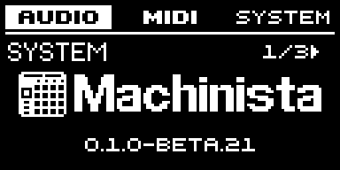
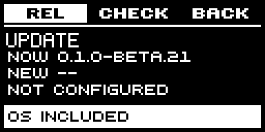
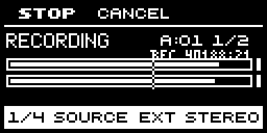

01 · Willkommen bei Machinista
Baue Beats, spiele Instrumente und stelle Songs zusammen - direkt am Controller. Machinista läuft auf einem Raspberry Pi. Beim Musikmachen brauchst du deshalb keinen angeschlossenen Laptop. Beginne mit dem eingebauten Synthesizer oder nutze eigene Aufnahmen. Programmierkenntnisse sind nicht nötig.
Hier anfangen. Lies Einrichtung und erster Start und probiere danach den ersten Sound auf der nächsten Seite aus. Mit eigenen Drum-Samples geht es bei Dein erster Beat weiter. Lies andere Kapitel nach Bedarf. Die Displayübersicht musst du vor dem Musikmachen nicht durcharbeiten.
Beschriftung in dieser Anleitung. GROSSBUCHSTABEN entsprechen Tasten oder Menüeinträgen am Controller. Drücken bedeutet kurz drücken und loslassen; halten bedeutet gedrückt lassen. Ein Encoder ist ein Drehregler zum Ändern eines Werts. Die Anzeigen bleiben englisch, auch in der deutschen Anleitung.

Dein erster Sound - ohne eigene Samples
Sobald Controller und Audioausgang funktionieren, probiere einen eingebauten Synth-Klang. So kannst du direkt spielen, bevor du die Bearbeitungsseiten kennenlernst.
- Wähle im normalen Pad-Modus ein leeres Pad. Öffne BROWSE und wähle die Kategorie Sounds.
- Öffne Machinista Synth, wähle eine Bank und dann einen Patch. Nutze die angezeigte Aktion LOAD. Dadurch werden Instrument und Klang auf das ausgewählte Pad geladen.
- Halte SHIFT und drücke PAD MODE, um KEYBOARD einzuschalten. Spiele mehrere Pads: Sie spielen jetzt verschiedene Noten dieses einen Sounds.
- Lass REC beim Ausprobieren ausgeschaltet. Stelle eine angenehme Ausgangslautstärke ein. Falls nichts zu hören ist, prüfe Audiogerät, gewählten Ausgang und MUTE/SOLO, bevor du Synth-Einstellungen änderst.
- Im Kapitel zur Pattern-Aufnahme lernst du, dein Spiel aufzunehmen. Im Projekt-Kapitel erfährst du, wie du es speicherst.

Begriffe auf dem Display
Du musst diese Begriffe nicht auswendig lernen. Schlage hier nach, wenn dir eine englische Beschriftung unbekannt ist. Die Namen bleiben am Gerät und in den Anweisungen gleich.
- Sound / pad: Ein Platz in einer Group. Er spielt ein Sample oder ein Instrument.
- Group: Ein Satz aus 16 Sounds. Zum Beispiel Drums in einer Group und Keys in einer anderen.
- Pattern / event: Eine wiederholte Phrase / eine darin gespeicherte Note oder ein Anschlag.
- Scene / Song: Eine Kombination von Patterns / die Reihenfolge dieser Songteile.
- Sample / slice / zone: Eine Audioaufnahme / ein ausgeschnittener Teil / die Tasten und Anschlagstärken, die ein Sample spielen.
- Bank / patch / preset: Eine Sammlung von Klängen / eine gespeicherte Klangeinstellung. Init ist ein neutraler Ausgangsklang.
- Encoder / focus: Ein Drehregler / die gerade zum Bearbeiten ausgewählte Einstellung.
- Velocity / voice: Die Anschlagstärke / eine gleichzeitig klingende Stimme.
- Routing / cue: Der Weg des Audios / ein separater Ausgang zum Vorhören, meist über Kopfhörer.
- MIDI / LV2 / WebUI: Noten und Steuerbefehle / ein Format für zusätzliche Instrumente und Effekte / die Bedienseite im Browser.
02 · Einrichtung und erster Start
Du brauchst einen Raspberry Pi 4 oder 5, sein Netzteil, eine SD-Karte mit mindestens 8 GB, deinen Controller und ein unterstütztes Audiogerät für Kopfhörer oder Lautsprecher. Das Image ist eine fertig vorbereitete Systemdatei. Beim Schreiben auf die SD-Karte werden Machinista und das Betriebssystem gemeinsam installiert.
- Öffne am Computer Raspberry Pi Imager und wähle über Use custom die bereitgestellte .img.xz-Datei. Wähle die SD-Karte aus und schreibe sie. Dabei wird die ausgewählte Karte gelöscht. Lass die Prüfung abschließen. Behalte die vorbereiteten Konto-/Netzwerkeinstellungen, statt eigene Imager-Einstellungen hinzuzufügen.
- Setze die Karte ein, verbinde Controller und Audiogerät und schalte den Pi ein. Nach dem Verbinden zeigt der Controller etwa zwei Sekunden lang das Machinista-Logo; jede Eingabe beendet diese Anzeige. Plane für den ersten Start etwa zwei Minuten und einen möglichen Neustart ein.
- Öffne Einstellungen mit SHIFT + MAIN. F1 wählt AUDIO. Wähle INTERFACE und drücke ENTER.
- Wähle AUTO, damit Machinista ein angeschlossenes USB-Audiogerät auswählt. Ohne USB-Gerät kann eine unterstützte Audioplatine am Pi verwendet werden. MAIN OUTPUT ist das hörbare Ausgangspaar. Lass SAMPLE RATE und BUFFER für den ersten Test auf den vorbereiteten Werten.
Ein neues Setup testen. Dies ist eine Beta. Probiere nach dem Start eines neuen Pi oder dem Anschluss eines anderen Audiogeräts einen Sound aus. Nimm ein kurzes Pattern auf und prüfe die Ausgänge, bevor du dich in einer Session darauf verlässt.
Datenträger. Lass die Start-SD-Karte im eingeschalteten Pi. Übertrage Samples über USB-Datenträger oder die WebUI.


03 · Deinen Controller kennenlernen
Die Mikro MK1 besitzt ein Display mit 128 x 64 Pixeln, drei Displaytasten und einen drückbaren Encoder. Die kontextabhängige Navigation erschließt weitere Funktionen ohne Computer.
Bedienelemente am Display. F1, F2 und F3 liegen über dem Display. Ihre Belegung steht am oberen Displayrand. Drehe den Encoder, um den fokussierten Wert zu ändern. Die beiden Pfeile unter dem Display wechseln je nach Anzeige zwischen Feldern oder Seiten.
Pad-Nummern. Pad 1 liegt unten links. Jede Reihe zählt von links nach rechts: 1-4, darüber 5-8, 9-12 und ganz oben 13-16. Funktion und Beleuchtung der Pads richten sich nach dem aktiven Modus.
Navigation. MAIN öffnet die dauerhafte Anzeige für Volume/Swing/Tempo. SHIFT + MAIN öffnet die Einstellungen. NAV wählt kontextabhängige Parameter. Halte VIEW, wähle SONG, MIXER, EVENTS oder LIVE FX mit dem Encoder und lass VIEW zum Öffnen los.
Auswahl bestätigen. Wo ENTER angeboten wird, kann häufig auch der Encoder gedrückt werden.
Zum Anfang04 · Die Anzeigen verstehen
Lies zuerst die Beschriftung am oberen Displayrand. Sie zeigt, was die Tasten darüber gerade tun. In der Mitte siehst du den Sound, die Noten oder die Wellenform, die du bearbeitest. An den Reglern steht, welche Einstellung du ändern kannst.
Auswahl und Fokus. Ein invertiertes Feld oder eine hervorgehobene Listenzeile kennzeichnet die Auswahl. In der Wellenform bleibt der Wiedergabebereich unverändert; die Bereiche vor START und nach END werden invertiert. Sample- und Slice-Marken zeigen die bearbeitbaren Grenzen.
Seiten und Felder. Seitenzahlen zeigen, wie viele Parameterseiten vorhanden sind. NAV zeigt das Ziel schon vor dem Loslassen an. Seitenpfeile sind nur aktiv, wenn eine Nachbarseite existiert. Feldpositionen dienen der Parameterauswahl und sind keine zusätzlichen Arbeitsbereiche.
Vorübergehende Meldungen. Statusmeldungen, etwa zu einer Audioverbindung oder CHOKE ALL NOTES, verschwinden nach einer Sekunde. Sie ersetzen die zugrunde liegenden Parameterwerte nicht.
Instrument- und Effektübersicht. Die erste PLUG-IN-Seite zeigt ein kleines Instrument-/Effekticon und den Patch- oder Effektnamen. Lange Namen laufen nach zwei Sekunden durch; Icon, Seitenzahl und Parameterwert bleiben stehen. Wellenformen, Pegel und detaillierte Parametergrafiken behalten ihren Platz.


05 · Navigation, Halten und Anheften
Einige Ansichten bleiben nur geöffnet, solange du ihre Taste hältst. PIN hält eine Ansicht offen. So kannst du die Taste loslassen und mit beiden Händen weiterarbeiten. Schalte PIN aus, wenn die Ansicht beim Loslassen wieder schließen soll.
- Halte SCENE, PATTERN oder PAD MODE für den vorübergehenden Zugriff. Drücke dabei MAIN, um den Anheftstatus umzuschalten. Lass die Modustaste los. Einen angehefteten Modus kannst du mit seiner eigenen Taste schließen und erneut öffnen.
- Halte in der Steuerungsansicht NAV. F2 wählt CHNL, F3 wählt PLUG-IN. Wähle das Ziel mit dem Encoder und prüfe seinen Namen vor dem Loslassen von NAV. NAV + Pfeile wählt die Seite.
- Halte in Sampling NAV, wähle RECORD, EDIT, SLICE oder ZONE mit dem Encoder und lass NAV los. SHIFT + SAMPLING öffnet Edit direkt.
Ansichtsnavigation. Halte VIEW und wähle mit dem Encoder eines der Icons SONG, MIXER, EVENTS oder LIVE FX. Beim Loslassen öffnet sich die Auswahl. Beim erneuten Aufrufen bleibt das aktive Icon markiert. Encoder drücken oder F3 OFF wählt es ab; danach VIEW loslassen, um zurückzukehren. F1 BACK wählt alle Icons ab; lass VIEW los, um zur letzten Sound-/Steuerungsansicht zurückzukehren. Im Events-Editor bleibt Zoom/Scroll über VIEW + F2 GRID erreichbar, in Sample Edit oder Slice mit aktivem EDIT direkt durch Halten von VIEW und Drehen des Encoders. SHIFT + VIEW öffnet Mixer weiterhin direkt.
Channel-Standardseite. Beim Wechsel von PLUG-IN zu CHNL mit NAV + F2 wird standardmäßig OUTPUT gewählt. Drehe den Encoder bei gehaltenem NAV, um INPUT, GROOVE oder MACRO gezielt zu wählen. Die Seitenzahl bezieht sich nur auf das gewählte Modul beziehungsweise die kompakten Plug-in-Seiten.


06 · Projects, Groups, Sounds und Patterns
Ein Projekt ist deine Arbeit an einem Song. Eine Group ist ein Satz aus 16 Pads. Ein Sound ist das, was ein Pad spielt. Ein Pattern ist eine wiederholte musikalische Phrase. Scenes verbinden die Patterns zu Songteilen; in Song legst du deren Reihenfolge fest.
| Objekt | Inhalt und Wirkung |
|---|---|
| Sound | Ein Pad-Slot: Sample-Zonen oder ein LV2-Instrument, Stimmenparameter, Plug-ins sowie Audio- und MIDI-Routing. |
| Group | Sechzehn Sound-Slots, eigene Patterns, Skalen-Einstellungen für das Spielen, Mixer und Effekte. |
| Pattern | Events für eine Group. Verschiedene Groups können gleichzeitig unterschiedliche Patterns spielen. |
| Scene | Eine Kombination von Verweisen auf Group-Patterns. Ein leerer Clip steuert kein Pattern bei. |
| Song | Eine geordnete Folge von Scene-Verweisen. Wiederverwendete Scenes verwenden dieselben Patterns. |
| Master | Die abschließende Projektmischung und Master-Bearbeitung statt des ausgewählten Sounds. |
Die richtige Ebene wählen. In der Steuerungsansicht wählt F1 MASTER, F2 GROUP und F3 SOUND. Halte GROUP und wähle das zugehörige Pad zum Wechseln der Group.
Auswählen löscht nichts. Das Auswählen eines Pads oder Wechseln eines Patterns beziehungsweise einer Group löscht deren Inhalt nicht. Ein fehlender oder stummgeschalteter Scene-Clip kann eine belegte Group dennoch unhörbar machen.


07 · Dein erster Beat
Baue einen einfachen Drumloop aus Kick, Snare und Hi-Hat. Dafür brauchst du drei eigene kurze WAV- oder MP3-Samples. Das öffentliche Image enthält kein Drum-Samplepaket. Lade die Dateien wie im WebUI-Kapitel beschrieben hoch oder schließe einen USB-Stick mit den Samples an.
- Wähle Group A und Sound 1. Drücke BROWSE. Öffne SD CARD und dann Library/Kicks oder deinen eigenen Ordner. Wähle eine WAV-Datei und verwende LOAD oder ENTER.
- Wähle ohne Verlassen von Browse Sound 2 über sein Pad und lade eine Snare. Wähle Sound 3 und lade eine Hi-Hat. Aktiviere PREHEAR, um die ausgewählte Datei vorzuhören.
- Drücke MAIN, wähle TEMPO mit F3 und stelle ein angenehmes Tempo ein. Kehre zur Sound-Ansicht zurück.
- Wähle ein leeres Pattern und lege vor der Aufnahme seine Länge fest. Aktiviere bei Bedarf das Metronom. Schalte REC ein, starte PLAY und spiele die Pads.
- Lass das Pattern loopen. Schalte REC aus, um die aufgenommenen Noten ohne weitere Ergänzungen zu hören. PLAY stoppt und startet die Wiedergabe; RESTART springt zum Anfang.
- Öffne PROJECT über die SHIFT-Aktionen der Scene-Ansicht oder die System-Einstellungen. Wähle SAVE. Mit MANAGE benennst du ein neues Project oder erstellst eine separate Kopie.
Ergebnis prüfen. Kick, Snare und Hi-Hat sollten sich entsprechend der angezeigten Pattern-Länge wiederholen. Spielen bei ausgeschaltetem REC darf keine Sequencer-Noten erzeugen.


08 · Ordner durchsuchen und Samples laden
Mit BROWSE suchst du ein Sample und lädst es auf ein Pad. SD CARD ist die Karte im Pi, USB ein angeschlossener Datenträger. Öffne einen Ordner, höre eine Datei vor und lade sie auf das ausgewählte Pad.
- Drücke BROWSE. Drehe den Encoder, um in der Liste auf- oder abwärts zu gehen. Drücke ENTER oder die Displaytaste OPEN/LOAD. F1 BACK führt zum übergeordneten Ordner; an der Wurzel einer Quelle gelangst du zur Quellenliste.
- Wähle SD CARD oder eine angeschlossene USB-Quelle. Öffne die Ordner bis zur gewünschten WAV- oder MP3-Datei. Ein Ordner-Präfix unterscheidet Ordner von Samples.
- F3 PREH schaltet das Vorhören um. Vorhören lädt die Datei noch nicht in den Sound.
- Wähle das Ziel-Pad, während Browse geöffnet bleibt, und lade das ausgewählte Sample. Wiederhole dies für weitere Pads, ohne zur Sound-Hauptansicht zurückzukehren.
USB-Datenträger und Projects. Eine USB-Quelle erscheint nach dem Einhängen und verschwindet beim Entfernen. Nutze COLLECT SAMPLES vor dem Übertragen eines Projects auf ein anderes System. Eine extern durchsuchte Datei liegt nicht automatisch im portablen Projektordner.
Unterstützte Inhalte. Der Datei-Browser am Controller zeigt WAV-Dateien. Kompatible LV2-Instrumente und -Effekte lädst du über den Plug-in-Browser.
Quick Browse. In BROWSE führt SHIFT + F2 FIND zum Sample des aktuellen Sounds.
WebUI: Sample Library laden und aufräumen
Öffne Sample Library. WebUI und Controller teilen die SD-/USB-Ordnerstruktur. Dies sind Bibliotheksdateien, noch keine Pad-Sounds.
- Wähle Storage, öffne den Zielordner und nutze Upload samples oder ziehe WAV/MP3 hinein. New folder legt Unterordner an; Parent folder und Pfad führen zurück. Erfolgreiche Upload-Zeilen verschwinden nach fünf Sekunden; Fehler bleiben sichtbar.
- MP3 und Fließkomma-WAV werden beim Upload in Sampler-PCM umgewandelt. Vorhandene Namen werden nicht überschrieben. Preview spielt im Browsergerät, PREHEAR am Controller über den Pi.
- Move öffnet die Zielauswahl. Wähle Datenträger und Ordner, dann Move here. Delete fragt vor dem endgültigen Löschen nach. Sammle Samples vor dem Aufräumen ein, wenn Projekte sie verwenden.

WebUI: vier Stems trennen
Nutze in der WebUI Sample Library die Aktion Separate stems neben einer WAV- oder MP3-Datei. Wähle beim ersten Mal Download & install engine für das optionale lokale Spleeter-Modellpaket (etwa 80 MB plus Laufzeitumgebung). Internet ist nur für die Einrichtung nötig; das Audio bleibt auf dem Pi.
- Stoppe PLAY, REC, Sample-Aufnahme und andere Jobs. Wähle Audio bis 60 Sekunden / 64 MiB und drücke Separate 4 stems. Mindestens 1,5 GiB freier RAM sind nötig; während der Verarbeitung muss die Wiedergabe gestoppt bleiben.
- Open stems folder zeigt die neuen WAV-Dateien Vocals, Drums, Bass und Other unter SD CARD / Library / Stems. Höre sie vor und lade sie wie normale Samples. Originale und vorhandene Pad-Zuweisungen bleiben erhalten.
Beta-Grenzen. Die Trennung kann Artefakte hinterlassen und braucht auf einem Pi Zeit. Cancel operation beendet den Job; Close blendet nur das Fenster aus. Bei zu wenig RAM wird die Verarbeitung ohne Veröffentlichung unvollständiger Stems beendet.
Controller: ein Sample in Stems trennen
Trenne eine ganze WAV- oder MP3-Datei ohne Computer in Vocals, Drums, Bass und Other. Originaldatei und Pad-Zuweisungen bleiben unverändert. Die Dateien werden unter SD CARD / Library / Stems gespeichert.
- Wähle in BROWSE eine WAV oder MP3, halte SHIFT und drücke F3 STEMS. F2 zeigt START, INSTALL oder CANCEL; F1 BACK führt zurück.
- Alternativ öffnest du Sampling > Edit und wählst bei den Bearbeitungsfunktionen neben Truncate und Normalize STEM SEPARATION. Nutze die angezeigte Aktion STEMS oder APPLY. Als Quelle dient das Sample des gewählten Pads, auch aus einem gesammelten Projekt. Bearbeitet wird die ganze Quelldatei, nicht nur der sichtbare Zoom oder die Auswahl.
- Stoppe zuerst Wiedergabe, Aufnahme und andere Bearbeitung. Fehlt die optionale Engine, wähle INSTALL und bestätige. Die Installation benötigt Internet; spätere Trennungen laufen lokal. Wähle danach START und bestätige die Trennung des ganzen Samples.
- Beobachte den Fortschrittsbalken; CANCEL stoppt die Bearbeitung. Bei DONE öffnet OPEN die vier fertigen WAV-Dateien in BROWSE. Höre sie vor und lade sie wie gewohnt auf Pads. Die WebUI zeigt denselben Job; eine weitere Trennung kann nicht gleichzeitig starten.
Grenzen. Bis 60 Sekunden / 64 MiB pro Quelle; mindestens 1,5 GiB freier RAM und 512 MiB freier Speicher. Die Modelleinrichtung benötigt mehr freien Speicher. Die Trennung kann Artefakte enthalten. Das Öffnen des Werkzeugs überschreibt keine Datei und weist kein Sample zu.


WebUI: Sample Kits mit 4 x 4 Pads bauen
Öffne den eigenen Reiter Sample Kits. Ein Set enthält benannte Bänke mit je 16 Pad-Sounds. Sounds bleibt der Bereich für Multisample-Instrumente und Synth-Patches. Der Editor arbeitet unabhängig vom laufenden Projekt.
- Wähle + New kit und vergib SET NAME. Ziehe Audiodateien auf ein Pad; mehrere Dateien belegen folgende Pads und erzeugen bei Bedarf weitere Bänke. Pad 1 liegt unten links.
- Mit Choose sample weist du eine vorhandene Datei von SD/USB zu. Ein Klick auf ein belegtes Pad spielt dessen erstes Sample im Browsergerät vor. Stop preview beendet es; dabei wird keine Note aufgenommen und nicht über den Pi gespielt.
- Ziehe Pads aufeinander, um sie zu tauschen. Den gewählten Sample-Namen bearbeitest du unter dem Raster. + Bank, Rename und Remove bank organisieren das Kit.
- Save kit sammelt Samples ein und speichert Pad-Zuordnungen. Save copy erzeugt ein separates Set. Wähle SD oder USB und öffne ein Kit zum Bearbeiten. New folder erstellt einen Ordner, Download ZIP eine portable Sicherung. Delete kit und Delete folder fragen vor dem endgültigen Löschen nach.

Sample Kits: Ordner und Expansions importieren
Ziehe einen Sample-Ordner, eine ZIP oder MPC-XPN in den Importbereich. Ordner-/Archivname werden als Set-Name übernommen; MPC Expansion.xml kann den Expansion-Namen liefern. Lies nach dem Konvertieren Import details.
- Nutze Import folder für bereits installierte Sample- oder Expansion-Inhalte. Der Importer liest Unterordner, konvertiert lesbare Audiodateien in PCM-WAV und erstellt Bänke mit 16 Pads. Die ganze Expansion bleibt in der Set-Liste zusammen.
- MPC-Drum-XPM-Programme übernehmen Sample-Pad-Positionen, Bänke und Velocity-Layer. Keygroup-Samples sind importierbar, die Instrumentenzuordnung wird aber nicht nachgebildet. Synth-Programme, Effekte, Patterns, Stimmung und Round-Robin werden nicht nachgebildet.
- Ziehe einen installierten Expansion-Ordner in den Importbereich. Die MXGRP-Kits werden in einem Ordner mit dem Namen der Expansion gespeichert. Eine einzelne MXGRP öffnet ein bearbeitbares Kit. Falls WAV-Dateien fehlen, wähle Locate expansion samples. Sample-Pads behalten ihre Reihenfolge und rücken bei ausgelassenen Synth-Sounds auf.
- Passende Kit-Vorschauen und Bilder werden übernommen, wenn sie vorhanden sind. Nutze die Wiedergabetaste in der WebUI oder PREH am Controller. Wenn der Browser versteckte Vorschaudateien überspringt, lade eine ZIP mit den Vorschauen und dem Namen der Expansion hoch oder nutze Attach preview für ein einzelnes Kit.
- Stoppe PLAY/REC und öffne BROWSE > SAMPLE KITS. Wähle SD oder USB, markiere das Kit und drücke LOAD. Enthält das Kit mehrere Bänke, wähle eine aus. Dabei werden Sounds und Group-Bearbeitung der gewählten Group ersetzt; bestehende Patterns bleiben. Speichere deine Group vorher, wenn du ihre Sounds behalten möchtest.
- Für eine einzelne WAV öffne BROWSE > SD CARD oder USB > EXPANSION SAMPLES. Wähle Expansion, Kit und WAV. Mit PREH hörst du vor, mit LOAD lädst du die WAV auf das gewählte Pad.
Transfergrenzen. WAV, AIFF, FLAC, MP3 und OGG; bis 1 GiB und 128 Bänke pro Set. Uploads ändern das laufende Projekt nicht. Sammle Projekt-Samples ein, bevor du Sets löschst, auf die diese Projekte verweisen.
Zum Anfang09 · Wiedergabe, Position und Tempo
PLAY startet und stoppt die Musik. RESTART springt zum Anfang. TEMPO bestimmt die Geschwindigkeit in Schlägen pro Minute (BPM). Diese Funktionen kannst du auch beim Bearbeiten eines Sounds oder Samples nutzen.
| Bedienelement | Aktion |
|---|---|
| PLAY | Wiedergabe umschalten. REC ist ein separater Aufnahmezustand. |
| RESTART | Zum Anfang springen, auch während laufender Wiedergabe. |
| Transport STEP links / rechts | Position entsprechend Arrange Grid verschieben. Gehalten wiederholt sich die Bewegung alle 0,25 Sekunden. |
| SHIFT + Transport STEP | Position mit dem feineren Step Grid verschieben. |
| SHIFT + PLAY | Metronom umschalten. |
| SHIFT + REC | Aufnahme mit Vorzähler starten. |
| SHIFT + MUTE | Alle Stimmen, Vorhör-Samples und gehaltenen Generatoren aus jedem Arbeitsbereich stoppen. |
Tempo. MAIN öffnet Volume/Swing/Tempo; F3 wählt TEMPO. SHIFT ermöglicht feine Änderungen mit zwei Nachkommastellen. SHIFT + ENTER ist Tap Tempo.
Getrennte Pfeile. Die Pfeile unter dem Display navigieren durch Parameter. Die beiden unteren Transportpfeile verschieben die Wiedergabeposition.

10 · Ein Pattern aufnehmen und ergänzen
Nimm dein Pad-Spiel als wiederholtes Pattern auf. REC speichert, welche Noten du wann spielst. Eingehendes Audio wird dabei nicht aufgenommen; dafür gibt es SAMPLING. Schalte REC aus, wenn du nur üben oder zuhören möchtest.
- Wähle Group und Pattern. Drehe in PATTERN den Encoder, um LENGTH einzustellen; SHIFT ermöglicht einzelne Steps. Prüfe, dass die Scene einen aktiven Clip für diese Group enthält.
- Halte GRID und wähle F3 GRID; NAV-Pfeile wählen REC QUANT zum Ein-/Ausschalten der Aufnahmequantisierung. SHIFT + GRID öffnet weiterhin RECORD SETTINGS.
- Aktiviere REC, starte PLAY und spiele. Die angezeigte Pattern-Länge bestimmt den Loop. In weiteren Durchläufen ergänzt Overdub neue Events, sofern kein anderer Aufnahmemodus gewählt ist.
- Schalte REC zum Anhören aus. Lösche falsche Noten oder mache die Eingabe rückgängig, statt den Sound-Slot zu leeren. Speichere das fertige Ergebnis.
Quantisierung und Timing. Quantisierung verschiebt Noten zum gewählten Raster. Quantize 50% bewegt sie nur einen Teil des Weges. Swing und Nudge sind separate Timing-Werkzeuge und können die Wiedergabe bewusst vom geraden Raster abweichen lassen.
Keine unbeabsichtigte Aufnahme. Prüfe zuerst REC, wenn beim Vorhören scheinbar neue Noten entstehen. Ein aktiver Aufnahmezustand kann beim Ansichtswechsel eingeschaltet bleiben. Prüfe den Events-Editor, statt eine Änderung am Sample zu vermuten.
Pattern-Länge. Lange Patterns besitzen weitere Step-Bänke und Editor-Seiten. FOLLOW führt den sichtbaren Ausschnitt mit der Wiedergabe mit. Ausschalten ändert nur die Ansicht, nicht die Loop-Länge.
Grid-Reiter. Halte GRID. F1 QUANT, F2 SWING und F3 GRID wählen den Timing-Bereich; NAV-Pfeile wählen den Parameter, einschließlich REC QUANT im GRID-Bereich. QUANT wird mit ENTER angewendet.

11 · Den Step-Sequencer programmieren
Baue einen Beat Schritt für Schritt, statt ihn live einzuspielen. Wähle einen Sound. Die 16 Pads stehen dann für Positionen im Loop. Ein leuchtender Step enthält eine Note. Drücke ihn erneut, um die Note zu entfernen.
- Öffne Step mit dem STEP MODE-Kurzbefehl SHIFT + NOTE REPEAT. Wähle zuvor den Sound oder die Keyboard-Note, die du programmieren möchtest.
- Drücke Pads zum Setzen oder Löschen von Steps in der sichtbaren Bank. Bei einem geslicten oder tonal gespielten Sound wird nach Möglichkeit die zuletzt gespielte Keyboard-Note verwendet, statt immer den ersten Slice zu nehmen.
- Wechsle die Step-Bank mit den Navigationsfunktionen. Aktiviere FOLLOW, damit die Bank der aktuellen Wiedergabeposition automatisch sichtbar wird.
- Nutze FIX VEL für gleichmäßige Anschlagstärken beim Einfügen. DOUBLE verlängert das Pattern durch Duplizieren seines Inhalts.
Ansicht und Inhalt. FOLLOW fügt keine Noten hinzu und ändert die Pattern-Länge nicht. Fehlt der Playhead, prüfe, ob dieses Pattern der aktive Clip ist und die Wiedergabe läuft.
Einzelne Events bearbeiten. Im Events- beziehungsweise Raster-Editor änderst du einzelne Noten, Wahrscheinlichkeit oder Länge. Step-Pads eignen sich für schnelles Ein- und Ausschalten, weniger für detaillierte Bearbeitung mehrerer Noten.
12 · Einzelne Events auswählen und bearbeiten
In EVENTS korrigierst oder veränderst du aufgenommene Noten. Jeder Block ist eine Note. Seine Position von links nach rechts zeigt den Start, seine Breite die Dauer. Wähle Noten aus, bevor du ihre Position, Tonhöhe, Anschlagstärke oder Länge änderst.
- Öffne PATTERN und drücke ENTER oder nutze SHIFT + SELECT. F1 wechselt zwischen Sound-Zeilen und Tonhöhen.
- Drehe den Encoder zum Verschieben des Zeitcursors. Halte SHIFT und drehe, um die Sound-Zeile oder Tonhöhe zu wechseln. F2 schaltet die Noten am Cursor in die Auswahl oder daraus heraus. SHIFT + F2 schaltet alle relevanten Noten um.
- An einer leeren Cursorposition setzt F3 oder ENTER eine Note und öffnet die Bearbeitung. Bei vorhandenen Noten öffnet sich das Note unter dem Cursor oder die markierten Noten. Die Pfeile wählen POSITION, NOTE, VELOCITY, PROBABILITY oder LENGTH.
- Kehre mit der Abschluss- oder Zurück-Aktion ins Raster zurück. Mit ERASE und Bestätigung löschst du ausgewählte Events. Cursor-Navigation pausiert Follow, damit die Ansicht beim Bearbeiten stehen bleibt.
Umfang der Auswahl. Eine markierten Noten hat Vorrang vor dem Note unter dem Cursor. In der Tonhöhenansicht bleibt der Sound gewählt. Bei mehreren Noten in einer Zelle wechseln SHIFT + Navigationspfeile die fokussierte Stimme.
Follow und Stop-Position. Bewegen des Cursors pausiert Follow. SHIFT + F1 oder VIEW > GRID > FOLLOW aktiviert es wieder. Der Playhead bleibt an der gestoppten Position stehen.


Events: einen Zeitbereich auswählen
Eine Bereichsauswahl enthält ausschließlich Noten des ausgewählten Sounds/Pads. Im Keyboard-Modus umfasst sie alle Tonhöhen dieses Sounds im Bereich. Andere Pads bleiben ausgeschlossen.
- Wähle zuerst den Sound/das Pad. Halte die physische SELECT-Taste und drehe den Encoder vom Zeitcursor aus vor oder zurück.
- Drehe zurück zum Verkleinern. Lass SELECT los, um die markierten Noten beizubehalten. Markierte Noten sind umrandet; Auswählen allein ändert keine Notendaten.
- EDIT bearbeitet die markierten Noten gemeinsam. ERASE mit Bestätigung löscht sie. NONE hebt die Auswahl auf; kurzes Drücken der Displayaktion SELECT schaltet nur die Noten am Cursor um.
- Mit markierten Noten kopiert SHIFT + Pad 11 nur die ausgewählten Noten dieses Sounds. Bewege den Zeitcursor zum Ziel und drücke SHIFT + Pad 12. Die erste kopierte Note landet am Cursor; Abstände, Tonhöhen, Velocity und Länge bleiben erhalten. Eingefügte Noten sind markiert. Ohne ausdrückliche Notenauswahl kopiert der Kurzbefehl das gesamte aktuelle Pad und behält beim Einfügen die ursprünglichen Pattern-Zeiten bei.

13 · PAD MODE: Keyboard, Skalen und Akkorde
Im normalen Pad-Modus spielt jedes Pad einen anderen Sound. KEYBOARD spielt verschiedene Tonhöhen des einen ausgewählten Sounds - wie Klaviertasten. SCALE hilft dir, in einer Tonleiter zu bleiben. Bei einem geslicten Sample können die Noten stattdessen verschiedene Abschnitte spielen.
- Wähle einen Sound mit Sample, zugeordneten Zones oder LV2-Instrument. SHIFT + PAD MODE öffnet KEYBOARD. Alle Noten und Akkorde spielen diesen einen Sound.
- Wähle ROOT, SCALE, CHORD MODE und TYPE/PRESET mit den Displaypfeilen; der Encoder ändert den Wert.
- CHORD MODE: OFF spielt Einzeltöne; HARM bildet Intervalle aus TYPE und SCALE; SET wählt vorbereitete Voicings; CUSTOM nutzt eigene Akkordzuordnungen. Wähle danach TYPE/PRESET.
- Spiele zum Testen ohne REC. Mit PLAY und REC werden die erzeugten Noten ins gewählte Pattern aufgenommen. FIX VEL setzt eine feste Anschlagstärke; 16 VEL verteilt Anschlagstärken des Sounds auf die Pads. PAD spielt wieder getrennte Drum-Sounds.
Beleuchtung und Slices. Belegte Custom-Chord-Pads leuchten schwach; gehaltene und zuletzt gespielte Pads sind hervorgehoben. Ein angewendeter Slice-Sound nutzt seine Slice-Zuordnung und schaltet Akkorderzeugung aus. Nutze für Akkorde einen tonalen Sound.
Choke und Link. Pad-Einstellungen enthalten auch Choke- und Link-Gruppen samt Modi. Eine gemeinsame Choke-Gruppe eignet sich für gegenseitig ausschließende Klänge wie offene und geschlossene Hi-Hats. Link-Gruppen können zugehörige Sounds gemeinsam auslösen.
Transponieren per Kurzbefehl. SHIFT + Pads 13/14 und 15/16 transponiert Sequencer-Events um Halbtöne und Oktaven. Dies ist kein allgemeiner Kurzbefehl zum Verschieben der Keyboard-Oktave.
Tonhöhenanzeige. Die Anzeige nutzt Notennamen; C3 entspricht MIDI 60. Bei einem neuen Sound beginnt Keyboard bei C3. Die Klaviaturgrafik folgt der zuletzt gespielten Note oder dem Akkord und behält den Fokus nach dem Loslassen.
Keyboard: CUSTOM, Spielvariationen und LEARN
Lade zuerst ein Akkordpreset. Die Einstellungen gehören zur aktuellen Group; der gewählte Sound liefert den Klang. Die Abbildungen zeigen CUSTOM-Spielparameter und Stimmenbearbeitung.
- Wähle CUSTOM und dann PRESET. PAD BANK wählt den nächsten Block mit 16 Akkorden. Ein MIDI-Keyboard nutzt die gespeicherten Eingangsnoten, Pads deren Reihenfolge. ROOT transponiert relativ zum gespeicherten Anker.
- STRUM MS versetzt Stimmen, DIRECTION ändert ihre Reihenfolge. TIME RAND variiert das Timing. VEL SPREAD, VEL DIR und VEL RAND gestalten Anschlagstärken. Beginne ohne Variation und erhöhe gezielt.
- Spiele ein belegtes Pad zur Akkordauswahl. Mit SHIFT: F1 LEARN, F2 INV- und F3 INV+. Umkehrungen behalten die Stimmenzahl. Die Pfeile wählen EDIT VOICE, EDIT NOTE und EDIT INPUT für den Encoder.
- LEARN wartet auf einen eingehenden MIDI-Akkord. Lass alle Tasten los, um die Noten zu übernehmen; erneutes LEARN bricht ab. Erfasst werden Tonhöhen, keine ursprünglichen Zeit- oder Velocity-Werte. Speichere das Projekt für die bearbeitete Zuordnung und Spielparameter.


WebUI: Custom Chords importieren und bearbeiten
Öffne den Reiter Chords. Ein Import liefert nur Noten; wähle zum Spielen einen passenden Sound am Controller. Die Akkordnamen im Bild sind Beispiele.
- Import chords akzeptiert MPC .progression, Ripchord .rpc und Machinista-Chord-JSON. Alternativ nutze New preset. Ungültige oder nicht unterstützte Dateien ergeben eine Fehlermeldung.
- Wähle Edit. Trage Preset name und Transpose anchor ein und setze je Zeile Input key, Chord name und Notes. Hier stehen MIDI-Nummern: 60 ist am Controller C3. Trenne Notennummern durch Leerzeichen oder Kommas. Add chord ergänzt, Entfernen löscht eine Zeile.
- Nutze Save preset und wähle am Controller PAD MODE > KEYBOARD > CUSTOM > PRESET. Der Inhalt wird ins Projekt kopiert. Wähle das Bibliotheks-Preset nach WebUI-Änderungen erneut, um die neue Fassung zu übernehmen.
- Download speichert JSON. Delete entfernt den Bibliothekseintrag; gespeicherte Projekte behalten ihre Akkordkopie. Bibliotheksänderungen überschreiben kein laufendes Projekt.

14 · Note Repeat und Arpeggiator
Halte mit NOTE REPEAT ein Pad, um wiederholte Anschläge zu spielen, etwa einen schnellen Hi-Hat-Wirbel. Ein Arpeggiator macht aus gehaltenen Noten oder einem Akkord eine wiederholte Notenfolge. Bei laufendem PLAY folgen die Wiederholungen dem Takt.
- Halte NOTE REPEAT und spiele die Pads. Wähle die Rate vor oder während des Spielens. Mit LOCK bleibt Repeat nach dem Loslassen der Modustaste verfügbar.
- F1/F2 wählen die angezeigten Repeat-Presets. SHIFT + F3 wechselt die Preset-Bank. Wähle RATE oder DIVISION mit den Pfeilen und drehe den Encoder für weitere Werte.
- Nutze für melodische Wiederholungen Keyboard und die Arpeggiator-Parameter. Wähle Richtung, Oktavumfang, Gate, Dynamik und Sequenz nach Bedarf.
- Aktiviere REC, wenn das erzeugte Spiel im Pattern gespeichert werden soll. SHIFT + MUTE beendet alle gehaltenen und wiederholten Noten.
Am Raster ausrichten. Bei laufender Wiedergabe wartet ein Pad-Anschlag zwischen den Unterteilungen auf die nächste Repeat-Grenze. Er startet den Repeat-Takt nicht neu. Bei gestopptem Transport nutzt Repeat sein eigenes Zeitintervall.
HOLD und LOCK. LOCK hält den Repeat-Modus aktiv. HOLD hält die gespielten Arpeggiator-Noten. Schalte HOLD aus, wenn Noten nach dem Loslassen nicht weiterlaufen sollen. Die beiden Funktionen haben unterschiedliche Aufgaben.


15 · Sampling: Eingang wählen und aufnehmen
Nimm Audio auf und lege das Ergebnis auf ein Pad. Wähle zuerst die Aufnahmequelle und das Ziel-Pad. Spiele die Quelle ab und beobachte die Pegelanzeigen. Die Threshold-Markierung zeigt, ab welchem Pegel die automatische Aufnahme startet.
- Drücke SAMPLING und wähle RECORD. Wähle EXT MONO, EXT STEREO oder INTERNAL. Wähle einen verfügbaren Eingangskanal beziehungsweise ein Kanalpaar oder die interne Quelle zum Resampling.
- Spiele die Quelle ab und beobachte die Pegelanzeigen. Passe die Verstärkung an der Quelle und bei unterstütztem HAT auch Input Gain an. Lass Pegelreserve: Eine übersteuerte Aufnahme wird durch Normalisieren nicht repariert.
- Wähle DETECT für eine pegelgesteuerte Aufnahme, SYNC für einen zeitlich begrenzten Sampler-Take oder LOOP für einen Take als AUDIO-Sound. Stelle Threshold beziehungsweise BARS vor dem Scharfstellen ein.
- Nutze die angezeigte START/REC-Aktion. In DETECT wartet die Aufnahme auf das Überschreiten der Schwelle. Die manuelle Auslöseaktion kann sie im scharfgeschalteten Zustand starten. STOP beendet die Aufnahme, CANCEL verwirft sie.
- Spiele das Ziel-Pad zum Prüfen. Aufnahmen erhalten einfache nummerierte Sample-Namen. Mit den verfügbaren History-Aktionen kannst du zu einer früheren Aufnahme zurückkehren.
Abtastrate am Eingang. Nutze eine vom angeschlossenen Interface unterstützte Sample Rate. Eine falsche Rate kann wie ein Bitcrusher klingen. Prüfe nach einem Gerätewechsel AUDIO > SAMPLE RATE erneut.
Audio und Noten getrennt aufnehmen. Die Record-Seite nimmt Audio auf. REC im Transportbereich steuert die Sequencer-Events. Prüfe vor einer neuen Aufnahme den richtigen Zustand.

Sampling: AUDIO-Sounds und Loop-Aufnahme
Ein AUDIO-Sound spielt eine Aufnahme synchron zum Group-Pattern, ohne auslösende MIDI-Noten. Die Quelle bleibt eine Sample-Datei. Insert-Effekte und normale Kanalrouten stehen weiter bereit.
- Wähle in RECORD ein leeres Zielpad. Intern wählst du INTERNAL und dann GROUP, MASTER oder SOUND mit Group-/Pad-Nummer. Extern wählst du den angeschlossenen Eingang.
- Setze MODE LOOP und beispielsweise BARS 1. START schaltet scharf, PLAY startet den Transport. Die Aufnahme beginnt am nächsten Takt und endet nach der gewählten Länge. Der Take wird zum AUDIO-Sound.
- Halte in RECORD SHIFT und drücke F2 AUDIO. Die Pfeile wählen das Feld, der Encoder ändert es.
- MODE AUDIO loopt ein vorhandenes Sample. BARS ist seine musikalische Länge. STRETCH erhält die Tonhöhe bei Tempoänderungen, OFF verändert die Abspielrate. TUNE transponiert. MODE SAMPLER stellt die Notensteuerung wieder her.
Transport und Pattern. Die Group benötigt einen aktiven Clip. STOP beendet die Wiedergabe; RESTART und Positionswechsel ändern die Audioposition. Kurze Patterns starten die Aufnahme früher neu, lange wiederholen sie. Pad-Anschläge starten während der Wiedergabe keinen zusätzlichen One-Shot. Ein MIDI-gesteuerter Audio-Gate-Modus ist nicht enthalten.

Sampling: BOUNCE TO PAD
Bounce nimmt einen Sound samt laufendem Pattern auf ein leeres Zielpad auf. Quellinstrument, Zustand und MIDI-Events bleiben erhalten. Externe Synthesizer werden in Echtzeit aufgenommen.
- Halte in RECORD SHIFT und drücke F1 BOUNCE. Wähle Felder mit den Pfeilen und ändere sie mit dem Encoder.
- Setze SOURCE G und SOURCE PAD. INPUT SOUND nimmt diesen Sound einschließlich Insert-Effekten und zugeführtem externem Audio auf. Alternativ wählst du einen direkten EXT-Eingang. Der Quell-Group-Clip muss aktiv sein.
- Wähle TARGET G, TARGET PAD, BARS und RESULT AUDIO oder SAMPLER. Das Ziel muss leer sein und sich von der Quelle unterscheiden. MIDI REC muss ausgeschaltet sein.
- START schaltet den Bounce scharf und startet bei Bedarf PLAY. Er nimmt ab dem nächsten Takt auf. CANCEL verwirft ihn, STOP beendet ihn vorzeitig. Nach dem Laden folgt ein AUDIO-Ergebnis automatisch dem Ziel-Group-Pattern.
Quelle erhalten oder stummschalten. MUTE SRC ist zunächst OFF. Aktiviere es, um das Original nach erfolgreichem Bounce stummzuschalten; sonst können beide spielen. MIDI und Plug-in-Zustand bleiben erhalten. Ein geändertes Ziel/Projekt wird nicht überschrieben, die Aufnahme bleibt in Samples. Das Laden kann den ersten hörbaren Loop-Durchlauf verzögern.

16 · Sample kürzen, auswählen und bearbeiten
Entferne unerwünschte Stille oder behalte nur den Teil, den du spielen möchtest. START und END bestimmen den Wiedergabebereich. Eine separate Auswahl legt fest, welchen Abschnitt Befehle wie Normalize bearbeiten. Prüfe diese Auswahl vor dem Anwenden.
- Öffne Edit direkt mit SHIFT + SAMPLING. Wähle den richtigen Sound und das richtige Sample, bevor du eine Grenze änderst.
- Wähle START oder END mit den Pfeilen und drehe den Encoder. Halte NAV zum Wählen der Seite für Wiedergabebereich oder Auswahl. Prüfe das angezeigte Ziel vor dem Loslassen.
- Wähle die Bearbeitungsfunktion mit den beschrifteten Vorher-/Weiter-Aktionen. NORMALIZE hebt den Sample-Pegel an; andere Funktionen wirken entsprechend ihren Einstellungen auf den ausgewählten Audiobereich. Prüfe den Bereich vor APPLY.
- Stelle für STRETCH Tempo und Länge ein und höre das Ergebnis vor APPLY an. CANCEL kehrt zurück, ohne die Vorschau zu übernehmen.
Normalisieren und Slices. Normalisiere das Quell-Sample, wenn alle Slices die Änderung übernehmen sollen. Ein Slice ist ein Bereich dieser Quelle und kein eigenes Normalisierungsziel. Zone Gain ist ein separater Wiedergabeparameter.
Originaldateien. Bearbeitung erzeugt abgeleitete Audiodateien, statt die Quelle unbemerkt zu überschreiben. Nutze trotzdem SAVE AS und COLLECT SAMPLES, bevor du ein wichtiges Project grundlegend änderst.
Löschen. Das Leeren eines Sound-Slots entfernt dessen Zuordnung. Es löscht nicht automatisch die Aufnahme oder Datei. Nutze zum Löschen einer Datei die ausdrückliche Sample-Delete-Ansicht mit Bestätigung.


17 · Wellenform zoomen und verschieben
Vergrößere die Wellenform, um einen Schnitt genau zu setzen, und verschiebe den sichtbaren Ausschnitt an die gewünschte Stelle. Die Wellenform ist ein Bild deiner Aufnahme. Zoom und Scroll ändern nur die Ansicht - nicht Klang, Geschwindigkeit oder Sample-Länge.
- Halte in Sample Edit oder Slice mit aktivem EDIT VIEW und drehe den Encoder direkt zum Zoomen. Lass VIEW zum Bearbeiten der Schnittpunkte los. Während VIEW gehalten wird, wählt der rechte Pfeil SCROLL und der linke wieder ZOOM. Ohne Slice EDIT öffnet VIEW + F2 WAVE weiterhin die Wellenformsteuerung.
- Du kannst auch Pads verwenden: Pad 2 zoomt heraus, Pad 6 hinein; Pads 1 und 3 scrollen nach links und rechts. Halte VIEW und drücke MAIN zum Anheften, wenn du VIEW anschließend loslassen möchtest.
- Kehre zur Grenzsteuerung zurück, um START oder END zu verschieben. Nach dem Hineinzoomen lassen sich kleine Änderungen leichter beurteilen.
- Spiele in Slice Edit den Slice erneut, um seine Grenze ohne Verlust der gewählten Zoomstufe zu fokussieren.
Slice-Fokus. In der Übersicht steht der ausgewählte Slice mit benachbartem Audio mittig. Bei starkem Zoom wird stattdessen die gewählte START- oder END-Schnittstelle zentriert. Wähle in Slice Edit mit linker/rechter Seitennavigation START oder END. Erneutes Spielen behält diese Wahl bei.
Ansicht beibehalten. Erneutes Spielen eines Slices behält den Zoom bei. Ein anderes Sample kann den Ausschnitt zurücksetzen. Zoom verändert nur die Ansicht, nicht die Slice-Positionen.


18 · Automatisch oder nach Raster slicen
Zerlege einen Loop in spielbare Abschnitte, die Slices heißen. GRID setzt gleichmäßige Schnitte. DETECT sucht nach Anschlägen, zum Beispiel Drum-Hits. Höre die Slices an und korrigiere die Schnitte, bevor du sie auf Pads verteilst.
| Modus | Einsatz und wichtigste Einstellung |
|---|---|
| SPLIT | Gleich große Abschnitte. Wähle Unterteilung beziehungsweise Anzahl. |
| GRID | Musikalische Unterteilung anhand von Quelltempo und gewähltem Raster. |
| DETECT | Schnitte anhand von Transienten. Stelle die Empfindlichkeit ein und prüfe die Grenzen. |
| MANUAL | Schnitte während der Wiedergabe mit den Pads setzen; siehe nächstes Kapitel. |
- Öffne SAMPLING > SLICE. Wähle MODE und stelle seine Parameter ein. Wellenform und Slice-Anzahl werden entsprechend aktualisiert.
- Wähle bei BPM AUTO, wenn das erkannte Tempo passt, oder MANUAL, wenn du das Quelltempo kennst. ADJUST mit halbem/doppeltem Tempo korrigiert eine Erkennung im falschen musikalischen Vielfachen.
- Höre die Slices über die Pads an. Öffne EDIT zur Korrektur einer Schnittstelle vor dem Anwenden. Mit APPL.TO wählst du eine andere Group oder einen bestimmten Sound als Ziel.
Ein umkehrbarer Schnittplan. Während der Bearbeitung sind Schnitte Metadaten für Bereiche. APPLY macht daraus spielbare Zuordnungen. Änderungen an automatischen Aufteilungen können den Plan neu erzeugen. Sichere wichtige Arbeit vor einem Wechsel der Schnittstrategie.
Tempo der Quelle. Slice-BPM beschreibt den Quell-Loop und die Interpretation des erzeugten Patterns. Es bedeutet nicht, dass die Quelle mit dem Project-Tempo aufgenommen wurde.

19 · Manuell choppen und Slices bearbeiten
Setze mit MANUAL eigene Schnitte beim Zuhören. Öffne danach Slice Edit, um den Anfang oder das Ende eines Slices zu verschieben. So korrigierst du einen Schnitt, ohne den gesamten Loop neu zu zerlegen.
- Wähle MANUAL bei ausgeschaltetem EDIT. Drücke Pad 1 zum Starten der Quelle. Schlage das nächste unbenutzte Pad an der gewünschten Schnittstelle an. Fahre mit den folgenden Pads fort.
- Drücke ein bereits belegtes Slice-Pad zum Abspielen ab seiner Startposition. Auch nach dem Ende des Samples kann ein vorhandenes Slice-Pad die Wiedergabe erneut starten. Du musst die Slices nicht neu erzeugen.
- Aktiviere EDIT und spiele den zu bearbeitenden Slice. Zunächst ist START fokussiert. Wähle START oder END mit der Links-/Rechts-Navigation und verschiebe dann die entsprechende Grenze.
- Prüfe den Schnitt mit Zoom und Scroll. Erneutes Spielen behält Zoom und START/END-Fokus bei. SPLIT/ADD ergänzt eine Grenze, REMOVE entfernt den gewählten Schnitt; DEL ALL leert den gesamten Schnittplan.
Vorhandene Arbeit erhalten. Das Vorhören eines belegten Pads fügt keinen Slice hinzu. Das nächste unbenutzte Pad erzeugt nur beim Live-Choppen einen Schnitt. Lass EDIT beim Verfeinern vorhandener Schnitte aktiv und vermeide ein versehentliches Neuerzeugen durch einen automatischen Modus.
Umgebung der Schnittstelle. In der Übersicht erscheint der Slice mittig mit seinen Nachbarn. Passt das Sample nicht mehr vollständig ins Display, wird die gewählte Schnittstelle sichtbar gemacht. So hörst und siehst du dieselbe Grenze.

20 · Slices einem Sound oder einer Group zuweisen
Wähle nach dem Prüfen der Schnitte mit APPL.TO das Ziel. Du kannst die Slices in einem Sound behalten und über Keyboard spielen oder auf die Pads einer Group verteilen. APPLY führt die Zuordnung aus. Prüfe davor das Ziel.
- Höre den gewünschten Slice an, wähle ihn und öffne APPL.TO. Wähle die Ziel-Group und den ersten Sound beziehungsweise das angezeigte Ziel für alle Sounds.
- Nutze Zielfelder und Encoder. GROUP mit einem Pad kann die Group wählen; Bank-Aktionen erschließen weitere Group-Bänke. Prüfe vor dem Anwenden das angezeigte Ziel.
- Wähle für einen einzelnen Slice die Einzeloption, also SINGLE / EDIT auf der Apply-To-Seite, dann den Sound-Slot und APPLY. Dies ist eine direkte Zuweisung; ein vorheriger WAV-Export ist nicht nötig.
- Wähle für alle Slices das Ziel und die Option zur Pattern-Erstellung, dann APPLY. Kehre bei Keyboard-Zuordnung zu Keyboard zurück und spiele die zugeordneten Slice-Noten.
MONO steuert Stimmen. MONO beim Anwenden auf eine Group setzt Polyphony = 1 und Choke Group = 1 für die zugewiesenen Sounds. Es wandelt eine Stereo-WAV nicht in eine Monodatei um.
Vorhandener Zielinhalt. Das Anwenden auf belegte Sounds kann deren Zuordnungen ersetzen. Nutze eine andere Group oder sichere eine Project-Kopie, wenn das vorhandene Kit erhalten bleiben soll.
Weiterbearbeitung. ZONE zeigt die zugewiesenen Noten- und Anschlagstärkebereiche sowie die Wiedergabeparameter je Zone. Kehre zum Bearbeiten des Schnittplans zu SLICE > EDIT zurück, statt versehentlich einen anderen Sound zu verändern.


21 · Zones und mehrschichtige Sample-Zuordnung
Baue aus mehreren Aufnahmen ein spielbares Instrument. Zum Beispiel übernehmen tiefe, mittlere und hohe Piano-Samples verschiedene Tasten. Jedes Sample hat eine Zone: die Noten und Anschlagstärken, bei denen es erklingt. ROOT ist die Tonhöhe der ursprünglichen Aufnahme.
| Zone-Seite | Parameter |
|---|---|
| PLAY | START und END der Zone. |
| LOOP | Loop ein/aus, Loop-Anfang und -Ende sowie Crossfade. |
| TUNE | Stimmung, Verstärkung, Panorama und Grundnote. |
| ENVELOPE | Attack und Decay der Zone. |
| MAP | Tiefste/höchste Note und niedrigste/höchste Anschlagstärke. |
- Öffne SAMPLING > ZONE und wähle die zu prüfende Zone. PREV/NEXT wechselt die Zone; ADD legt eine weitere Zuordnung an und REMOVE entfernt die gewählte.
- Halte NAV und wähle die Parameterseite mit den Seitenpfeilen. Die normalen Pfeile wählen Felder; drehe anschließend den Encoder.
- Spiele Noten über die Noten- und Anschlagstärkebereiche und prüfe die ausgelösten Samples. Prüfe die Grundnote, wenn ein zugewiesener Slice oder ein Multisample falsch gestimmt klingt.
Gain und Normalisieren. Zone Gain multipliziert den Wiedergabepegel. Es schreibt die Quelldatei weder neu noch normalisiert es sie. Normalisiere die Quelle in Sample Edit, bevor du einen vollständig geslicten Sound beurteilst.
Überlappende Zuordnungen. Überlappende Noten- und Anschlagstärkebereiche können Audio schichten. Prüfe bei unerwarteter Lautstärke die überlappenden Zones, statt nur den Master abzusenken.
WebUI: Sounds löschen
Jeder Eintrag unter Sounds hat Delete, auch erzeugte Synth- und LV2-Patches aus Bänken.
- Wähle Delete und bestätige den Sound-Namen. Abbrechen lässt den Eintrag unverändert. Gelöschte Bank-Einträge kehren nach Aktualisierung oder Neustart nicht zurück; die ursprüngliche Patch-Bank bleibt installiert.
- Vorhandene Projekte behalten ihren geladenen Sound, Samples und Plug-in-Einstellungen. Eine Wiederherstellungskopie des Bibliothekseintrags bleibt erhalten.
WebUI: einen Multisample-Sound bauen
Öffne Sounds > New sampler Sound oder Edit current pad zones für den gewählten Sound. Lade die Samples vorher in Sample Library hoch.
- Setze Sound name, Folder und kommagetrennte Tags. Add samples öffnet die SD-/USB-Auswahl: Navigiere, markiere Aufnahmen und nutze Add selected. Jede Aufnahme wird eine Zone.
- Roots from filenames erkennt Noten wie C3 oder A#2. Wähle zuerst die Oktavschreibweise: Controller-C3 = MIDI 60, wissenschaftlich C4 = MIDI 60. Prüfe Root für jedes Sample: die Originaltonhöhe, nicht die tiefste spielbare Note.
- Map between root notes verteilt die Tastatur zwischen Aufnahmen. Extend to full keyboard erweitert die Ränder. Bearbeite Key low/high und Vel low/high; Überlappungen können gleichzeitig klingen. Nutze Kartenränder oder Notenauswahl.
- Wähle eine Zone für Tune, Gain, Pan, Wiedergabebereich und Loop. Save Sound sammelt ihre Dateien ein. Lade die gespeicherte Fassung mit Load on selected pad oder aus der Sounds-Kategorie in BROWSE.


22 · Sampler: Stimmen, Hüllkurven und Filter
Forme, wie ein geladenes Sample spielt. Voices bestimmt, wie viele Noten gleichzeitig klingen können. Eine Hüllkurve formt Anschlag und Ausklang jeder Note. Ein Filter macht den Klang heller oder dunkler. Spiele beim Einstellen einige Noten und ändere zunächst nur einen Wert.
| Seite | Zweck |
|---|---|
| VOICE | Polyphonie, Legato-Glide und Pitch-Bend-Bereich. |
| PITCH/ENV | Stimmung, Rückwärtswiedergabe und Lautstärkehüllkurve ONESHOT/AHD/ADSR. |
| FX/FILTER | Kompression, Drive, Sample-Rate-/Bit-Reduktion und Filter OFF/LP2/BP2/HP2/EQ. |
| MOD ENV | Attack-/Decay-Modulation von Tonhöhe, Cutoff und Panorama. |
| LFO | Form, freie/synchronisierte Rate, Phase und Modulationstiefe für Tonhöhe/Filter/Panorama. |
| VEL/MOD | Einfluss von Anschlagstärke und Modulationsrad, einschließlich Start und Cutoff. |
- Wähle SOUND mit F3. Halte NAV, wähle PLUG-IN mit F3, dann SAMPLER und lass NAV los. NAV mit Pfeilen wechselt Seiten; Pfeile allein wählen Felder.
- Wähle ADSR für einen gehaltenen, geformten Sound. Nutze ONESHOT oder AHD für Drum-Schläge. Nicht verwendete Parameter des Hüllkurventyps werden ausgeblendet.
- Wähle LP2, BP2, HP2 oder EQ und stelle Cutoff sowie Resonance beziehungsweise EQ Gain/Width ein. Cutoff hat einen gleichmäßigen Drehweg pro Oktave; SHIFT regelt viermal feiner. Spiele das Pad zum Vergleichen.
Zwei Arten von Effekten. Der Sampler-Filter ist auf Sound-Ebene eingebaut. Ein LV2-Filter ist ein separates Plug-in der Kette und kann auch eine Group oder den Master bearbeiten. Absichtliche SR/BITS-Reduktion erzeugt einen Bitcrusher-Effekt; sie ist keine Einstellung der Aufnahmerate.
Einen Klang nach Gehör formen
Beginne mit diesen Reglern, statt gleich jede Seite zu lernen. Dieselben Ideen gelten für viele Synthesizer und Sampler. Ändere beim Spielen einen Wert und höre das Ergebnis, bevor du den nächsten änderst.
- ATTACK: Höhere Werte lassen den Klang weicher und langsamer einsetzen. Niedrige Werte geben einen direkten Anschlag.
- DECAY und SUSTAIN: Decay bestimmt, wie schnell der erste Pegel abfällt. Sustain bestimmt den Pegel während einer gehaltenen Note.
- RELEASE: bestimmt, wie lange eine Note nach dem Loslassen ausklingt. Lange Ausklänge und große Akkorde brauchen mehr Stimmen. Bei Samples beeinflusst auch der gewählte Wiedergabemodus das Ende.
- CUTOFF: Bei einem Tiefpass machen niedrige Werte den Klang dunkler, höhere heller. Andere Filtertypen bearbeiten andere Klanganteile.
- RESONANCE: betont den Bereich um die Filterfrequenz. Beginne mit wenig Resonanz; hohe Werte können laut oder scharf werden.
- VOICES und MONO: Stimmen sind gleichzeitig klingende Noten. Bei einer niedrigen Begrenzung können frühere Noten abgeschnitten werden. Mono eignet sich für einstimmige Bässe und Leads.
- LEVEL und Effekte: Vergleiche Klänge bei ähnlicher Lautstärke. Senke den Pegel bei verzerrtem Ausgang, bevor du weitere Effekte hinzufügst.
23 · LV2-Plug-ins hinzufügen, ersetzen und entfernen
Plug-ins ergänzen Instrumente oder Effekte. LV2 ist das dafür verwendete Plug-in-Format. Ein Instrument erzeugt Klang, ein Effekt verändert hindurchlaufendes Audio. In einer Effektkette arbeitet ein Effekt nach dem anderen - wie hintereinandergeschaltete Pedale.
- Wähle die gewünschte Ebene MASTER, GROUP oder SOUND. Öffne die PLUG-IN-Navigation und wähle einen vorhandenen Slot oder ADD PLUGIN.
- SHIFT + BROWSE öffnet den Plug-in-Browser auch bei bereits belegtem Slot. Wähle ein kompatibles Instrument oder einen Effekt und lade es an die gewählte Position.
- Drehe die angezeigten Regler und spiele Pads zum Anhören. Weitere Parameter liegen auf zusätzlichen Seiten. BYPASS vergleicht bearbeitetes und unbearbeitetes Audio.
- Wähle den Slot mit NAV + Pfeilen. Nutze in der Plug-in-Navigation/Slot-Bearbeitung REMOVE oder SHIFT + BROWSE mit dem Entfernen-Eintrag. Bestätige REMOVE PLUGIN?.
Kette verwalten. COPY/PASTE dupliziert den gewählten Plug-in-Zustand; MOVE ändert die Reihenfolge. Ein Instrument muss an erster Stelle bleiben. Entfernen und Verschieben aktualisiert zugehörige Parameterverweise. Sichere vor dem Umbau komplexer automatisierter Ketten eine Kopie.
Echtzeit-Leistung. Plug-ins unterscheiden sich stark bei Rechenbedarf und gemeldeter Latenz. Teste jede Kette mit der gewünschten Puffergröße. Tape- oder Look-ahead-Effekte können hörbar verzögern, obwohl Pads und Displays sofort reagieren.


WebUI: LV2-Plug-ins installieren und entfernen
Das leere Image enthält keine LV2-Bundles. Öffne LV2 Plugins für kompilierte Linux-ARM64-Effekte oder -Instrumente; Quellcode, Windows- und macOS-Dateien sind nicht ladbar.
- Upload & check akzeptiert ZIP, TAR.GZ, TGZ oder TAR bis 128 MiB mit vollständigen .lv2-Ordnern. manifest.ttl, Metadaten, Binärdateien und Ressourcen müssen zusammenbleiben.
- Prüfe Architektur-, Bibliotheks- und Metadatenergebnis. NOT OK bedeutet nicht installiert. Kompatible Bundles werden erst bei gestoppter Wiedergabe/Aufnahme aktiviert; aktualisiere die Liste und öffne den Plug-in-Browser am Controller.
- Find installed plugins filtert Namen/URIs. Remove entfernt das ganze Bundle mit allen enthaltenen Plug-ins. Im aktuellen Projekt genutzte Bundles sind geschützt; entferne zuerst deren aktive Instanzen.
- Entfernen ist etwas anderes als das Leeren eines Controller-Slots. Alte Sounds/Projekte behalten Verweise und brauchen dasselbe Plug-in erneut. Bewahre Installer und Lizenzen auf. Eingebaute Live FX benötigen kein LV2.

WebUI: Patch-Bänke verwalten
Öffne Patch banks in der Navigation oder Manage patch banks unter Sounds. Wähle Instrument/Effekt in der WebUI; dies ändert den gewählten Controller-Sound nicht.
- Import preset bank akzeptiert Dexed SYX/JSON, OB-Xd FXB/FXP/JSON und RaffoSynth DAT/JSON. Entpacke Downloads zuerst. Die Liste zeigt nur das gewählte Instrument und die Patch-Anzahl jeder Bank.
- Remove bank entfernt auch die erzeugten Einträge aus Sounds. Projekte und separat gespeicherte bearbeitbare Sounds behalten ihre Parameter. Eingebaute Machinista-Synth-Kategorien und Init sind geschützt.
- Sounds ist nach Multisample Sounds, LV2 patches und Machinista Synth gruppiert. Klappe Typ, Instrument und Bank auf oder nutze Type und Search Sounds.

24 · Channel-Routing und Mixer
Stimme deine Sounds im Mixer aufeinander ab. LEVEL ändert die Lautstärke, PAN verteilt einen Sound zwischen links und rechts. Routing bedeutet, den Weg des Audios festzulegen - etwa eine Group an einen eigenen Ausgang deines Audiogeräts zu schicken.
- Wähle SOUND, GROUP oder MASTER. Öffne CHANNEL und wähle OUTPUT. AUDIO steuert das Hauptziel, AUX1/AUX2 die Sends und MIDI auf Sound-Ebene die externe Notenausgabe.
- Wähle für getrennte Interface-Ausgänge den angebotenen Ausgangsport oder das Kanalpaar. Route den Sound oder die Group und prüfe das Ziel auch am Interface.
- Öffne den Mixer mit SHIFT + VIEW. F1/F2/F3 wählen Master/Group/Sound. Navigiere zum Kanal und wähle Pegel-, Panorama- oder Ausgangsfeld.
- Stelle Main Output und einen getrennten Cue Output in Audio ein. Cue Level regelt das Vorhören. Main und Cue dürfen nicht dieselben Hardwarekanäle überlappend nutzen.
Eingang und Rückkopplung. INPUT wählt externe/interne Kanalquellen und Monitoring-Eigenschaften. Route ein Ziel nicht auf seinen eigenen Eingang zurück; ungültige Routing-Schleifen werden abgewiesen.
Musikalischer Pegel und Interface-Pegel. Master Level regelt die Project-Mischung. Die Kopfhörer-/Lautsprecherregler des ULTRA HAT ändern den Codec-Ausgangspegel; Input Gain ändert die Aufnahmeverstärkung. Diese Hardwareregler sind keine universellen Gain-Regler für USB-Interfaces.


Ducktor: Sidechain-Ducking
Ducktor ist ein eingebauter Effekt. Setze ihn auf einen Bass-Sound, eine Group oder ein anderes Ziel und nutze ein Signal wie eine Kick zum rhythmischen Absenken.
- Öffne am Ziel einen leeren Effekt-Slot und lade Machinista Ducktor. SOURCE wählt den Trigger-Sound, die Group oder EXT STEREO. Ungültige Rückkopplungswege sind ausgeschlossen.
- Spiele Trigger und Ziel. Senke THRESHOLD, bis GR die Absenkung zeigt. Stelle ATTACK, RELEASE, MAX DUCK und MIX ein. Die zweite Seite enthält KNEE, HOLD und DETECT HP.
- Speichere Project oder Sound zum Erhalten von Quelle und Werten. Muten des Triggers entfernt auch dessen Audiosignal; ein separater Ghost-Trigger-Modus ist nicht vorhanden.

Eingebaute Studioeffekte
Diese Effekte kannst du ohne zusätzliche Plug-ins nutzen: EQ, Compressor, Limiter, Transient, Reverb, Delay, Chorus, Flanger, Phaser, Tremolo, Vibrato und Auto Pan.
- Wähle SOUND, GROUP oder MASTER. Öffne die Plug-in-Kette, wähle ADD PLUG und danach unter EFFECT den gewünschten Effekt.
- Spiele deinen Sound und drehe die beschrifteten Encoder. Reverb bietet ROOM, HALL und PLATE. Delay bietet STEREO, PING PONG, TAPE und DUB; SYNC folgt dem Projekttempo und DIVISION bestimmt die Echoabstände.
- Mit MIX mischst du Effekt und Originalsignal. Speichere das Projekt zum Erhalten der Einstellungen. Über die gewohnte Automation kannst du Parameteränderungen aufnehmen.


25 · Mute, Solo, Auswahl und Duplizieren
MUTE schaltet ein Pad oder eine Group stumm. Mit SOLO hörst du es allein. Das Auswählen eines Pads bestimmt, was du bearbeitest; es schaltet nichts stumm. DUPLICATE erstellt eine Kopie. Prüfe vor dem Pad-Druck, welcher Modus geöffnet ist.
- Halte MUTE oder SOLO und drücke ein Sound-Pad zum Umschalten. Die angezeigte Group-Aktion wechselt zur Group-Ebene.
- Mute beendet den laufenden Sample-Klang sofort, statt sein Ausklingen abzuwarten. Prüfe bei einer vollständig stummen Group zusätzlich Group-Mute und Scene-Clip-Aktivierung.
- SELECT dient zur lautlosen Fokussierung und Mehrfachauswahl. Die angezeigte Aktion ALL/NONE wählt die entsprechende Menge aus oder hebt sie auf.
- Nutze DUPLICATE mit der passenden Quell- und Zielauswahl. Prüfe vor dem Bestätigen, ob du einen Sound, ein Pattern oder eine Scene duplizierst.
Alle Stimmen stoppen. SHIFT + MUTE stoppt von jeder Anzeige aus aktive Sample-Stimmen, Plug-in-/MIDI-Noten, Vorhör-Samples und gehaltene Repeat-/Arp-Noten. Der Arbeitsbereich bleibt geöffnet.
CLEAR setzt keinen Sound zurück. SHIFT + CLEAR entfernt die betroffenen Pattern-Noten. Halte zum Leeren eines Sound-Slots SHIFT + ERASE und drücke dessen Pad. Das entfernt Sample-/Plug-in-Zuordnungen und ist ein anderer Vorgang als Mute.
Aktionen beim Halten. MAIN plus gehaltene Modustaste ändert deren PIN-Zustand. Die drei Displayaktionen richten sich nach dem Kontext.


26 · Scenes und Song-Arrangement
Baue Songteile wie Intro, Strophe und Refrain als Scenes. Jede Scene bestimmt, welches Pattern jede Group spielt. In Song ordnest du die Scenes an. Nutzen zwei Scenes dasselbe Pattern, wirkt eine Änderung am Pattern in beiden Songteilen.
- Erstelle Patterns in den benötigten Groups. Wähle eine Scene und dann für jede Group das zugehörige Pattern. Lass einen Clip leer, wenn die Group nicht spielen soll.
- Wähle eine weitere Scene und erstelle eine Variation. Bei laufender Wiedergabe bestimmt Perform Grid, wann ein angeforderter Scene-Wechsel wirksam wird.
- Öffne SCENE, halte SHIFT und nutze SONG. PROJECT liegt als benachbarte Zusatzaktion daneben.
- Wähle vor dem Öffnen von Song eine Scene. INSERT (F1) fügt sie an der ausgewählten Song-Position ein. Der Auswahl-Encoder bewegt die Markierung. PLAY (F2) schaltet Song-Wiedergabe um; DELETE (F3) entfernt einen Eintrag nach Bestätigung.
Scene-Länge. Automatische Scene-Länge folgt den aktiven Patterns; eine ausdrücklich gewählte Länge kann dies überschreiben. Patterns dürfen unterschiedlich lang sein und innerhalb einer längeren Scene loopen.
Eine unabhängige Variation. Eine duplizierte Scene besitzt nicht zwingend unabhängige Patterns. Nutze den Unique-/Kopierablauf, wenn die Variation eigenständig bearbeitbare Patterns braucht.
Master-Automation. Pattern-Automation gehört zum Group-Pattern. Song-Master-Automation wird getrennt von diesen Pattern-Spuren verwaltet.


Unabhängige Pattern-Clips arrangieren
Jede Gruppe hat eine Timeline-Zeile. Ein Clip wählt Pattern, Start, Länge und Startversatz. Clips wiederholen ihr Pattern und lassen sich unabhängig von Scenes platzieren. Der Scene-Song bleibt erhalten.
- Öffne VIEW > SONG, dann SHIFT + F2 CLIPS. F1 MENU zeigt die Clip-Aktionen, F2 startet und F3 verlässt die Ansicht. Die Pfeile wählen das Feld, der Encoder ändert es.
- Wähle eine freie Position, Gruppe und Pattern und dann ADD. CLIP wählt einen vorhandenen Clip; hinter dem letzten erscheint NEW. START verschiebt, LENGTH wiederholt oder kürzt und OFFSET ändert den Start im Quellpattern. SHIFT ermöglicht feine 1/16-Schritte.
- COPY dupliziert in freien Platz. DELETE fragt vor dem Löschen. Clips derselben Gruppe dürfen sich nicht überlappen; verschiedene Gruppen spielen gleichzeitig. Undo/Redo und Projektspeicherung erfassen Clip-Änderungen.
- Wähle MENU > MAKE UNIQUE, bevor du nur ein Vorkommen bearbeiten möchtest; MENU > EDIT NOTES öffnet dessen Events-Editor. FROM SONG kopiert den Scene-Song, ohne ihn zu entfernen.
- Eine leere Clip-Timeline bleibt stumm. Halte PATTERN und wähle es mit seinem Pad, um wieder ein Pattern abzuspielen. PLAY startet am Timeline-Cursor und stoppt nach dem letzten Clip. FOLLOW führt die Anzeige zurück zur Wiedergabe. SONG-Audio-/MIDI-Export nutzt die gewählte CLIPS- oder SCENES-Anordnung. Grenzen: 512 Clips, 1024 Takte.
Verknüpfte Patterns. Änderungen am Quellpattern gelten für alle verknüpften Clips. MAKE UNIQUE kopiert Noten und Pattern-Modulation in einen freien Pattern-Platz, ohne Samples oder Plug-ins zu duplizieren.


27 · Automation, Macros und MIDI Learn
Nimm Reglerbewegungen auf, damit sie mit der Musik wiedergegeben werden. Das heißt Automation. Ein Macro fasst nützliche Einstellungen zum Spielen zusammen. MIDI Learn verbindet einen Regler am externen Keyboard oder Controller mit einer Einstellung in Machinista.
- Spiele das Pattern und nutze die in der Parameteransicht vorgesehene AUTO-Schreibgeste. Halte auf der Mikro SHIFT beim Ändern unterstützter Parameter, um deren Bewegung aufzuzeichnen.
- Beende den Schreibmodus und höre den nächsten Loop. Die Parameterwiedergabe wirkt vorübergehend: Der gespeicherte Grundwert bleibt vom automatisierten Wert getrennt.
- Wähle in Macro Assign einen Zielparameter und mache ihn auf der Macro-Seite zugänglich. Prüfe vor dem Zuweisen die Ebene Sound/Group/Master.
- Berühre für MIDI Learn den Zielparameter, öffne MIDI LEARN und drücke LEARN (F2). Sende dann den externen CC. BACK bricht ab, REMOVE löscht die gewählte Zuordnung. Teste ohne Automation-Aufnahme.
Die richtige Spur löschen. SHIFT + Pad 10 (CLR AUTO) löscht Automation entsprechend dem aktuellen Ziel und der Auswahl. Sample und Pattern-Noten bleiben erhalten. Speichere vor dem Löschen eventuell noch benötigter Automation.
Ebene und Speicherung. Sampler-, Routing-, Wert- und kompatible Plug-in-Parameter besitzen Automationsziele. MIDI-Zuordnungen und Plug-in-Verweise werden im Project gespeichert; Verschieben oder Entfernen eines Plug-ins verändert die entsprechenden Ziele.


28 · MIDI-Ports, Clock und Bluetooth
Spiele Machinista mit einem Keyboard oder steuere ein externes Instrument an. MIDI überträgt Noten und Steuerbefehle, kein Audio. Soll ein externer Synth über Machinista hörbar sein, verbinde zusätzlich seine Audioausgänge.
- Wähle MIDI INPUT für eingehende Noten und Regler sowie MIDI OUTPUT für das externe Ziel. Stelle den Ausgangskanal des Sounds passend zum empfangenden Instrument ein.
- Stelle CLOCK auf OFF, IN oder OUT. IN folgt einer externen Clock; OUT sendet Clock. Passe CLOCK OFFSET nach einem Test mit Metronom an das empfangende Setup an.
- Öffne BLUETOOTH MIDI und aktiviere ON/OFF. F2 sucht, SHIFT + F2 öffnet Pairing und ENTER schaltet die Verbindung zum gewählten Gerät um.
- Verbinde ein iPad über eine Bluetooth-MIDI-fähige App. Versetze ein Keyboard in seinen Bluetooth-MIDI-Pairing-Modus und suche/verbinde es anschließend über Machinista.
Bluetooth MIDI ist kein Bluetooth-Audio. Die Verbindung überträgt unterstützte Noten-, Steuer- und Clock-Nachrichten. Sie ist keine Audioverbindung zum iPad und macht den USB-C-Stromanschluss des Pi nicht zu einem universellen Audio-/MIDI-Geräteanschluss.
Verfügbarkeit prüfen. Ein sichtbarer Port ersetzt keinen vollständigen Kabel-/App-Test. Prüfe bei fehlenden Noten Portauswahl, Kanal, Pairing und empfangende App, statt dich allein auf den Gerätenamen zu verlassen.


29 · Project-Namen, Presets und portable Speicherung
Speichere das Projekt, um deine Arbeit zu behalten. Ein Projekt enthält deinen Song-Aufbau. Mit einem Sound-Preset kannst du ein Instrument oder einen Pad-Sound in einem anderen Projekt wiederverwenden. Sammle die verwendeten Samples ein, bevor du ein Projekt auf eine andere Karte oder einen anderen Pi überträgst.
- Öffne PROJECT über die System-Einstellungen oder die SHIFT-Aktionen der Scene-Ansicht. Wähle MANAGE und dann NEW PROJECT. Der Name beginnt leer.
- Wähle mit dem Namens-Encoder ein Zeichen und bewege den Cursor mit den Navigationspfeilen. RANDOM schlägt einen Namen vor. SHIFT macht aus CANCEL die Aktion CLEAR; OK übernimmt einen gültigen Namen.
- RENAME ändert den Anzeigenamen, SAVE AS erstellt einen unabhängigen gespeicherten Eintrag. DELETE verlangt Bestätigung. Nach dem Löschen eines gespeicherten Eintrags bleibt die aktuelle Arbeitskopie als UNTITLED verfügbar.
- SAVE SOUND/SAVE GROUP erzeugt wiederverwendbare Presets. COLLECT SAMPLES kopiert referenzierte Samples vor einer Übertragung in einen portablen Project-Speicherort.
Mehr sichern als die Project-JSON. Bewahre das Project zusammen mit gesammeltem Audio und Plug-in-Zuständen auf. Sichere das Original, bevor du Samples ersetzt oder eine Kette umbaust.
Schnell speichern. Nutze PROJECT > SAVE. Der Project-Arbeitsbereich ist auch über die System-Einstellungen erreichbar.
RAM und Datenträger. Samples werden für die Wiedergabe in den RAM geladen; der Sampler streamt nicht vom Datenträger. SAMPLE RAM zeigt die Nutzung und kann bei gestopptem Transport ungenutzten Sample-Speicher freigeben.


WebUI: Projekte sichern und übertragen
Öffne Projects. Die Liste enthält gespeicherte Fassungen, nicht alle ungespeicherten Änderungen im laufenden Projekt.
- Speichere zuerst am Controller und nutze Refresh projects. Project ZIP lädt das gespeicherte Projekt samt eingesammelten Dateien herunter. JSON only enthält nur die Projektbeschreibung und ist kein portables Sample-Backup.
- Upload project akzeptiert ZIP bis 1 GiB oder JSON bis 8 MiB. Warte auf die Abschlussmeldung. Der Import legt ein gespeichertes Projekt an und ersetzt nicht sofort die laufende Performance.
- Lade den Import am Controller über PROJECT. Prüfe Hinweise auf fehlende Dateien/Relink. JSON ohne referenzierte Audiodateien benötigt Originalpfade oder neue Zuordnungen.
- Delete fragt nach Bestätigung des Projektnamens. Stoppe vorher PLAY und REC. Beim geladenen Projekt wird ein leeres Projekt geöffnet und dessen gespeicherter Platz entfernt. Eine Wiederherstellungskopie bleibt erhalten; gemeinsam genutzte Samples und Plug-in-Dateien bleiben verfügbar.
- Plug-ins und lizenzierte ROM-Daten sind vom Projektarchiv getrennt. Installiere auf dem Ziel-Pi dieselben kompatiblen LV2-Plug-ins vor dem Laden ihrer Sounds. Behalte vor dem Kartenwechsel eine geprüfte Sicherung.

30 · Fehlende Dateien zuordnen und exportieren
Findet ein Projekt ein Sample nicht, hilft Relink beim erneuten Zuordnen der Datei. Export erstellt eine Audio- oder MIDI-Datei für andere Zwecke - etwa einen fertigen Mix zum Teilen oder einzelne Spuren für deine Musiksoftware.
- Öffne bei fehlenden Samples MANAGE > RELINK SAMPLES. Prüfe Eintrag und Suchergebnisse oder navigiere zur richtigen Ersatzdatei. Wähle keine nur ähnlich benannte, inhaltlich andere Datei.
- Wähle für Audio MANAGE > EXPORT AUDIO. Stelle RANGE auf PATTERN, SCENE oder SONG und SOURCE auf MIX, SOUND, GROUP oder eine Stem-Auswahl.
- Stelle Sample Rate, Format/Bittiefe, Ausklanglänge, Normalisierung, Loop-Optimierung und Ziel ein. Prüfe freien Platz auf SD/USB und starte das Rendern.
- Wähle für Noten EXPORT MIDI. Prüfe nach dem Export auf der Abschlussseite Ziel und Dateinamen. Teste die Datei in der empfangenden Anwendung.
Den richtigen Bereich wählen. PATTERN exportiert das ausgewählte Group-Pattern. SCENE enthält dessen aktive Clips; SONG folgt der Song-Liste. Ein Song-Export benötigt ein nicht leeres Arrangement.
Ausklang und Loops. Ein Ausklang erhält das Nachklingen von Effekten nach dem musikalischen Ende. Loop-Optimierung und lange Ausklänge dienen unterschiedlichen Zielen. Wähle passend zum wiederholten Loop oder fertigen Track.
Grenzen des Exports. Der Offline-Renderer nutzt die Project-Engine und kompatible Plug-ins. Audio externer Hardware wird durch MIDI-Export oder Export einer internen Mischung nicht nachgebildet.
MP3-Export. Wähle in EXPORT AUDIO das FORMAT MP3. DEPTH wird zu BITRATE: 128, 192, 256 oder 320 KBPS (Standard). WAV/AIFF behalten die vorherige Bittiefe. MP3 ist verlustbehaftet und kann beim Abspielen zusätzliche Rand-Samples enthalten; für präzise Sample-Loops WAV/AIFF wählen. Wähle SD CARD oder USB als Ziel vor EXPORT.
Export-Fortschritt. RENDER zeigt Dateinummer und Prozentfortschritt. Warte auf EXPORT DONE, bevor du den Zieldatenträger entfernst. Cancel bricht den Vorgang ab.


31 · Audio- und Controller-Einstellungen
Passe Audioausgang, Pad-Reaktion und Display an dein Setup an. Das Audiointerface ist das Gerät für Kopfhörer, Lautsprecher oder Aufnahmequellen. SHIFT + MAIN öffnet AUDIO, MIDI und SYSTEM. Wähle einen Ordner, markiere eine Zeile und drücke ENTER.
| Ordner / Eintrag | Verwendung |
|---|---|
| AUDIO / INTERFACE | AUTO wählt ein verfügbares unterstütztes Audiogerät. Du kannst es auch selbst wählen. |
| SAMPLE RATE / BUFFER | Klangformat und Audiopuffer. Behalte beim ersten Test die vorbereiteten Werte. |
| MAIN / CUE | Wähle getrennte Ausgänge für Hauptmix und Vorhören, falls dein Gerät sie bietet. |
| PLUGIN DELAY | Optionaler Ausgleich für verzögernde Effekte. Standardmäßig aus; nur bei gestoppter Wiedergabe ändern. |
| HEADPHONE / SPEAKER / INPUT | Kopfhörer-, Lautsprecher- und Eingangspegel unterstützter Audioplatinen (HATs). |
| SYSTEM / Display | Helligkeit und Kontrast für den gerade bedienten Controller. |
| SYSTEM / Pads | Pad-Empfindlichkeit und Umsetzung der Anschlagstärke in Lautstärke. |
| SYSTEM INFO | Version, Rechenlast, Arbeitsspeicher und Platz auf Datenträgern. |
Kleinere Audiopuffer. AUDIO > BUFFER bietet AUTO, 128, 256, 512, 1024, 2048 und 4096 Frames. Probiere zuerst 256. Bei Knacksern wähle einen größeren Wert. ACTIVE zeigt die vom Interface tatsächlich angenommene Größe. Intern wird weiterhin in 256-Frame-Blöcken verarbeitet; die Warteschlangendauer ist nicht die gesamte Spiellatenz.


WebUI: Systeminformationen, SSH und Ausschalten
Die rechte Seitenleiste ist neben allen WebUI-Reitern verfügbar. Sie zeigt Gesamt-CPU und je CPU-Kern einen Balken mit Prozentwert sowie RAM, Speicher, Temperatur und Laufzeit. Die Gesamt-CPU ist über alle Kerne gemittelt; ein voller Kern kann Audio begrenzen, obwohl der Gesamtwert niedrig ist. Die Werte werden regelmäßig aktualisiert.
- Enable SSH aktiviert Fernzugriff mit vorhandenem Linux-Konto und Passwort/Schlüssel. Login zeigt den Benutzer. Ausschalten stoppt SSH. Die Einstellung bleibt nach Neustarts erhalten; im frischen Image ist SSH aus.
- Restart und Shut down öffnen eine Bestätigung. Save & restart oder Save & shut down speichert Projekt/Plug-in-Zustand und stoppt die Wiedergabe. Cancel bricht ab.
- Warte nach dem Herunterfahren bis zum vollständigen Stopp, bevor du Strom, Start-SD oder HAT entfernst. Öffne nach Neustart die WebUI erneut. Updates sind für alle unter System > UPDATE und WebUI > Updates verfügbar. Wähle Beta oder Release und prüfe manuell; zur Installation müssen eine signierte Updatequelle eingerichtet und PLAY/REC gestoppt sein.


Audioeinstellungen verständlich erklärt
Bringe den Ton zuerst mit den vorbereiteten Einstellungen zum Laufen. Diese Werte kannst du später anpassen. Im Hardware-Mixer erscheinen nur Regler, die dein Audiogerät unterstützt.
- INTERFACE: das verwendete Audiogerät. MAIN OUTPUT: das Ausgangspaar für Lautsprecher oder Kopfhörer. CUE: ein separater Ausgang zum Vorhören, falls vorhanden.
- Input Gain: verstärkt ein Mikrofon oder eine andere Aufnahmequelle vor der Aufnahme. Ausgangs- und Kopfhörerpegel ändern die Abhörlautstärke. Das sind unterschiedliche Regler.
- Pegel und dB: 0 dB auf einer digitalen Aufnahme-/Ausgangsanzeige ist die Obergrenze. Lass Platz für laute Anschläge. An der Grenze kann Clipping entstehen, eine harte Verzerrung. Ein Eingangs-Spitzenpegel um -12 dB ist ein brauchbarer Ausgangspunkt.
- BUFFER: Ein kleinerer Puffer kann direkter reagieren, lässt dem Pi aber weniger Zeit für die Audioberechnung. Bei Knacksern unter Last nutze weniger aufwendige Sounds oder probiere einen größeren Puffer.
- SAMPLE RATE: wie oft Audio pro Sekunde erfasst wird. Höher ist für ein Projekt nicht automatisch besser und benötigt mehr Rechenleistung. Behalte den vorbereiteten Wert, solange kein Grund zum Ändern besteht.
- CPU: zeigt die Rechenlast, nicht die Lautstärke. Ein ausgelasteter Kern kann Aussetzer verursachen, obwohl der Gesamtwert niedrig aussieht. Probiere dieselbe Musik mit weniger Instrumenten/Effekten, um die Last als Ursache zu prüfen.
Display, Pads und Hardware-Pegel
Display- und Pad-Einstellungen gelten für den Controller, den du gerade bedienst. Der Hardware-Mixer gehört dagegen zum Audiogerät. Spiele beim Einstellen der Abhörlautstärke ein Pad, damit du die Änderung hören kannst.
Nur den bedienten Controller ändern. Display- und Pad-Einstellungen gelten für diesen Controller. System Info beginnt mit Logo/Version, danach folgen CPU/RAM, Balken mit Prozentwerten je CPU-Kern und die Datenträgerseiten.
CPU-Anzeige. Der Prozentwert ist die Gesamtauslastung über alle Kerne, kein Einzelkernwert. Plug-ins, Stimmen, Abtastrate und Puffergröße bestimmen die Leistungsreserve. Eine niedrige Leerlauflast garantiert keinen Betrieb schwerer Sets ohne Aussetzer.
Hardware-Mixer und Reset. AUDIO > INTERFACE MIXER zeigt von ALSA gemeldete Aufnahme-, Ausgangs- und Kopfhörerpegel, soweit das Gerät diese anbietet. Pads bleiben spielbar. SHIFT + F1 setzt unterstützte Display-/Pad-Werte zurück.
Zum Anfang32 · WebUI, WLAN und Sample-Übertragung
Die WebUI ist die Bedienseite von Machinista im Browser. Öffne sie am Handy, Tablet oder Computer, um Samples hochzuladen, Projekte zu verwalten und Sounds zu ordnen. Eine zusätzliche App brauchst du nicht. Verbinde dich mit demselben Netzwerk wie der Pi.
- Wenn kein gespeicherter Router verbunden ist, verbinde dich mit Machinista-XXXX. XXXX steht für die letzten vier Hexadezimalzeichen der permanenten WLAN-MAC-Adresse. Das Hotspot-Passwort ist machinista.
- Öffne http://10.42.0.1:8080. Lade WAV-Dateien nach Library/Kicks, Library/Snares, Library/Hi-Hats, Library/Loops oder in eigene Ordner. Öffne diese Ordner am Controller.
- Suche und wähle unter WLAN deinen Router und gib sein Passwort ein. Der Pi wechselt das Netzwerk. Verbinde dich wieder mit diesem Heimnetz und öffne http://machinista.local:8080 oder die zugewiesene IP-Adresse.
- Scheitert die Router-Verbindung oder geht sie verloren, kehrt der Hotspot zurück. Für lokale Nutzung braucht der Router keinen Internetzugang. Das einzelne interne WLAN-Modul wechselt zwischen Router- und Hotspot-Betrieb.
- Nutze für SMB smb://machinista.local/Samples; unter Windows \\machinista.local\Samples. Benutzername und Passwort lauten beide machinista. Die Freigabe zeigt die Sample-Library auf der SD-Karte.
Vorhören und Zugriff. Vorhören in der WebUI spielt auf deinem Browser-Gerät, nicht über die Audioausgänge des Pi. Diese Beta hat bewusst keine WebUI-Anmeldung. Alle im verbundenen Netzwerk können auf die angebotenen Dateifunktionen zugreifen.
Übertragungsgrenzen. WAV-Uploads sind auf 1 GiB pro Datei begrenzt und berücksichtigen eine Freiplatzreserve. Vorhandene lokale Dateien werden nicht stillschweigend überschrieben. Angeschlossene USB-Quellen sind über die WebUI erreichbar.
Konten im Start-Image. Das verteilbare Image nutzt das Konto machinista. Persönliche Projects und WLAN-Zugangsdaten des Quellgeräts sind nicht enthalten. SSH ist im Image deaktiviert.
WebUI: WLAN verbinden und Hotspot nutzen
Nutze Computer, Tablet oder Smartphone im selben Netz. Die englischen WebUI-Bedienelemente sind für alle Controller gleich.
- Ohne gespeicherte Routerverbindung verbinde dich mit Machinista-XXXX, Passwort machinista. XXXX stammt aus den letzten vier WLAN-MAC-Zeichen. Öffne http://10.42.0.1:8080.
- Wähle in der Wi-Fi-Seitenleiste Scan for Wi-Fi, dann Wi-Fi network, Password und Connect. Der Pi wechselt das Netz; dabei kann die Seite die Verbindung verlieren.
- Verbinde dein Browsergerät wieder mit dem Router und öffne http://machinista.local:8080 oder die zugewiesene IP mit :8080. Bei Fehlschlag oder fehlendem Router verbinde dich erneut mit dem Hotspot und 10.42.0.1:8080.
- SMB bietet dieselbe SD-Library unter smb://machinista.local/Samples, Konto/Passwort machinista. Lass die Start-SD im Betrieb eingesteckt. Browser-Vorhören bleibt auf dem Browsergerät.

33 · Kurzbefehle und sicheres Bearbeiten
Kurzbefehle beschleunigen häufige Aufgaben. Ein + bedeutet: Halte die erste Taste und drücke die zweite dazu. Prüfe vor CLEAR, COPY oder PASTE das ausgewählte Pad und die markierten Noten, damit du den gewünschten Teil deiner Musik änderst.
| Tastenkombination | Ergebnis |
|---|---|
| SHIFT + Pad 1 / 2 | Undo / Redo. |
| SHIFT + Pad 3 / 4 | Step Undo / Step Redo; Hardwarebeschriftung COMPARE / SPLIT. |
| SHIFT + Pad 5 / 6 | Quantisierung 100% / 50%. |
| SHIFT + Pad 7 / 8 | Ausgewählte oder relevante Events nach links / rechts verschieben. |
| SHIFT + Pad 9 | Nur die Events des gewählten Sound-Pads in diesem Pattern löschen; das Sample bleibt erhalten. |
| SHIFT + Pad 10 | Automation im aktuellen Ziel löschen. |
| SHIFT + Pad 11 / 12 | Events: 11 kopiert ausdrücklich markierte Noten; Cursor versetzen, dann 12 zum Einfügen mit ursprünglichen Abständen. Ohne Notenauswahl werden alle Events des aktuellen Pads an den ursprünglichen Pattern-Positionen kopiert. |
| SHIFT + Pad 13 / 14 | Events um -1 / +1 Halbton transponieren. |
| SHIFT + Pad 15 / 16 | Events um -12 / +12 Halbtöne transponieren. |
| SHIFT + ERASE + Sound-Pad | Sound-Slot samt Zuordnung zurücksetzen. |
| SHIFT + MUTE | Alle Noten, Stimmen und Vorhör-Samples global stoppen. |
Vor einer löschenden Aktion. Prüfe Ebene, Group, Sound, Pattern und Auswahl. Eine invertierte Bestätigung verlangt eine Entscheidung und ist keine Statusmeldung. Lies die Frage und nutze die beschriftete Bestätigen-/Abbrechen-Aktion.
Sampling-Kurzbefehle. SHIFT + SAMPLING öffnet Sample Edit; SHIFT + PAD MODE aktiviert Keyboard; SHIFT + SELECT öffnet Events. Verwechsle diese Aktionen nicht mit dem Anheften von Modi.
Zum Anfang34 · Fehlersuche und Checkliste
Wenn etwas nicht wie erwartet klingt, prüfe einen Punkt nach dem anderen. Beginne mit dem ausgewählten Sound, MUTE/SOLO und dem Audioausgang. Speichere eine Projektkopie, bevor du Noten entfernst oder Sounds ersetzt.
| Symptom | In dieser Reihenfolge prüfen |
|---|---|
| Kein Klang | Interface und Main Output; Group-/Scene-Clip; Sound-/Group-Mute oder Solo; Sample-Zuordnung; Pegel. |
| Noten werden nicht aufgenommen | REC aktiv; aktives Group-Pattern; Pattern-Länge; richtige Keyboard-Note; nächster Loop. |
| Lange Verzögerung nach Pad-Anschlag | Effekte der Kette umgehen, besonders Look-ahead/Tape; dann Puffer und CPU prüfen. |
| Verzerrte Aufnahme | Übersteuerung am Eingang; gewählte und unterstützte Sample Rate; SR/BITS-Effekte im Sound. |
| Nur ein Slice erklingt | Notenzonen und gespielte Note; richtiger Ziel-Sound; Noten-/Anschlagstärkegrenzen der Zone. |
| Editor folgt nicht | FOLLOW aktiv; aktuelles Pattern aktiv; Transport läuft; Cursor-Bearbeitung hat Follow pausiert. |
| Group bleibt stumm | Group-Mute, andere Group auf Solo, leerer Scene-Clip, Ausgangsroute und gewähltes Pattern. |
| USB-Datei fehlt | Datenträger eingehängt; richtiger Ordner; WAV-Endung; fehlende externe Dateien neu zuordnen. |
Vor dem Ende einer Session. Beende Aufnahmen, speichere das Project und sammle Samples vor einer Übertragung. Sichere Project- und Audioordner. Fahre das System geordnet herunter, bevor du Strom trennst oder den HAT wechselst.
Ein Problem melden. Notiere Controller, Arbeitsbereich, Group/Pattern, Audiointerface, Sample Rate/Buffer und genaue Bedienfolge. Ein Displayfoto und ein möglichst kleines gespeichertes Project erleichtern die Reproduktion.
Weiter zur Displayübersicht. Die folgenden Seiten sind eine Bildreferenz, kein weiterer Einstieg. Beschriftungen benennen Arbeitsbereich und sichtbare Parameterzuordnungen, damit du die Anzeige dem beschriebenen Ablauf zuordnen kannst.
Zum Anfang35 · Live FX spielen und aufnehmen
Spiele Effekte mit den Pads, während dein Beat läuft. PUNCH wirkt nur, solange du das Pad hältst. FLEX bleibt nach dem Loslassen aktiv. Mit KNOB schaltest du den gewählten Effekt ein oder aus und regelst seine Stärke. Bei aktivem REC kannst du dein Spiel aufnehmen.
- Halte SHIFT und drücke SOLO, um Live FX zu öffnen.
- Pads 1-15 wählen Effekte; Pad 16 ist DRY/OFF. PUNCH wirkt beim Halten, FLEX bleibt nach dem Loslassen aktiv, KNOB schaltet den gewählten Effekt um. Lies vor dem Spielen den Effektnamen.
- F1/F2/F3 wählen PUNCH/FLEX/KNOB. Drehe den Encoder für DEPTH.
- Aktiviere PLAY und REC, um FX-Gesten als Pattern-Automation aufzunehmen. Bei ausgeschaltetem REC werden weder Noten noch Automation geschrieben.
Effekte sicher verlassen. BACK, SHIFT + SOLO oder normale Navigation schaltet den manuell gehaltenen/festgesetzten Effekt aus. Auch New/Load setzt manuelle FX zurück. Gespeicherte Automation kann ihren Effekt bei Wiedergabe erneut aktivieren.
Wiedergabe zuerst. Komplexe Plug-in-Ketten und viele Stimmen benötigen weiterhin CPU. Ein eingebauter Effekt beseitigt keine Überlastung einer Instrumentenkette.

36 · Scene-Werkzeuge, Bänke und Quantize
Mit Scene Options bearbeitest du einen ganzen Songteil. UNIQUE PATTERNS erstellt eigene Pattern-Kopien für eine Scene. So kannst du den Refrain ändern, ohne auch die Strophe zu ändern. Quantize rückt Noten an ein gleichmäßiges Zeitraster.
- Halte SCENE und drücke SHIFT + F1 OPTIONS. Drehe den Encoder für die Aktion und nutze F2 SELECT.
- AUTO LENGTH entfernt eine manuelle Scene-Länge. UNIQUE PATTERNS kopiert referenzierte Patterns, damit Änderungen andere Scenes mit den ursprünglichen Patterns nicht verändern. DELETE SCENE entfernt nach Bestätigung auch ihre Song-Verweise.
- SCENE oder PATTERN + SHIFT + Navigationspfeile wechselt Bänke.
- Halte GRID, wähle QUANT mit F1, stelle Ziel und Stärke ein und drücke ENTER.
Ziel prüfen. Übe Delete, Clear oder Unique an einer Projektkopie. Ziel und Bestätigungsfrage sind entscheidend.


37 · Eigene Akkorde und Spielvariationen
Lege einen ganzen Akkord auf ein Pad. Mit CUSTOM wählst oder erstellst du eigene Akkordbelegungen. Alle Akkord-Pads spielen den ausgewählten Instrumenten-Sound. Strum versetzt die Noten zeitlich. Umkehrungen verschieben Noten um eine Oktave und verändern so die Lage des Akkords.
- Öffne PAD MODE, aktiviere KEYBOARD und wähle den Akkordmodus CUSTOM. Auf den Akkordseiten kannst du ein Preset wählen oder Pad-Zuordnungen bearbeiten.
- Importiere unterstützte MPC-.progression- oder Ripchord-Akkordpresets in der WebUI. Diese enthalten Notenzuordnungen, keine samplebasierten MPC-Keygroup-Instrumente.
- LEARN erfasst eingehende Tonhöhen im gewählten belegten Akkord. Speichere das Projekt für diese Änderungen. Wiederverwendbare Bibliotheks-Presets erstellst/bearbeitest du in der WebUI unter Chords; die Bedienung steht im PAD-MODE-Kapitel.
- Stelle Strum/versetzte Anschläge und Spielvariationen in der Akkordkonfiguration ein. Teste ohne REC und nimm die Performance anschließend in ein Pattern auf.
Pad-Rückmeldung. Belegte Akkordpads leuchten schwach, gespielte hell. Das zuletzt gespielte Pad bleibt hervorgehoben, damit der Bearbeitungsfokus erkennbar bleibt.
Sound-Zuordnung. Sampler-Zones benötigen passende Root-, Key-Low/High- und Velocity-Bereiche. Ein Akkordpreset enthält weder Instrumentenklang noch Samples.
Zum Anfang38 · Sounds, Zones und Autosampler
Speichere ein Instrument, um es später unter Sounds wieder zu laden und zu spielen. Ein Multisample-Sound nutzt mehrere Aufnahmen über die Tastatur verteilt. Ein Plug-in-Sound behält das Instrument und seine Einstellungen. Autosampler spielt und nimmt für dich mehrere Noten auf und ordnet sie den Tasten zu.
- Füge in der WebUI unter Sounds Samples hinzu und prüfe Root sowie Key Low/High als Notennamen. Lege Velocity-Bereiche fest. Notennamen im Dateinamen können Root vorschlagen; prüfe jeden Vorschlag vor dem Speichern.
- Benenne den Sound und wähle Ordner/Tags. Sounds erscheinen als eigene Browser-Kategorie. Die Zone-Bearbeitung am Controller bleibt erhalten.
- Stoppe die Wiedergabe/Aufnahme für Autosampler. Wähle External MIDI oder das geladene LV2-Instrument. Externe Hardware benötigt MIDI OUT und eine Audio-IN-Verbindung.
- Halte in SAMPLING NAV, wähle AUTO und lasse los. Pfeile wählen Felder, der Encoder ändert Werte. F2 START startet, F3 CANCEL bricht ab.
- Prüfe Name, Notenbereich und Quelle und nutze START. Nach Abschluss werden die aufgenommenen Zones automatisch zugeordnet und als Sound gespeichert.
Keine Werksinhalte. Das Image enthält keine Sound-Presets, Samples oder LV2-Bundles. Füge eigene Dateien hinzu und installiere kompatible Plug-ins separat.
Live-LV2-Patch. Save current Sound / LV2 patch speichert Einstellungen/Zustand und Kette statt gerendertem Audio. Zum späteren Laden muss dasselbe kompatible Plug-in installiert sein.

WebUI: einen Live-LV2-Patch als Sound speichern
Ein Live-Patch erhält Instrument und Plug-in-Kette. Autosampler erzeugt stattdessen aufgenommene WAV-Zones.
- Lade das LV2-Instrument auf einen Sound und stelle Patch und Effekte am Controller ein. Wähle diesen Sound vor dem Öffnen von Sounds in der WebUI; prüfe Group, Pad und Namen in der Kontextzeile.
- Wähle Save current Sound / LV2 patch. Trage Name, optional Folder und Tags ein und nutze Save patch and strip. Warte auf die Bestätigung. Dabei wird kein Audio gesampelt.
- Der Sound erscheint in der Sounds-Bibliothek und im Controller-Browser. Suche nach Name/Tag oder filtere nach Ordner. Eingerückte Ordner zeigen die Hierarchie und Sound-Anzahl. New folder und New sampler Sound nutzen den gewählten Ordner. Load on selected pad ersetzt das Ziel nach Bestätigung; prüfe dieses vorher.
- Dasselbe kompatible LV2-Plug-in muss installiert bleiben. Patch-Speichern liefert weder Plug-in-Datei noch Werks-/ROM-Daten mit. Für ein vom Quellsynth unabhängiges Sample-Instrument nutze Autosampler.

WebUI: Autosampler konfigurieren und starten
Öffne Sounds > Autosampler und stoppe Wiedergabe sowie Aufnahme. Pro Note/Velocity-Kombination wird ein Sample aufgenommen und einem neuen Sound zugeordnet.
- Trage Sound name, Folder und Tags ein. Wähle Current LV2 instrument für den gewählten Controller-Sound oder External MIDI instrument. Externes Sampling benötigt MIDI-Ausgang/-Kanal und den Audioeingang des Interfaces.
- Setze Lowest/Highest MIDI note und Semitone interval. Velocity layers ist eine Liste echter Anschlagstärken, etwa 32, 64, 96, 127, keine Anzahl. Prüfe die geschätzte Zonenanzahl und Dauer.
- Note length hält die Taste, Tail erfasst die Ausklingphase nach Note-off und Gap trennt Aufnahmen. Trim leading silence entfernt Stille vor dem Anschlag mit kurzem Vorlauf. Prüfe extern den Eingangspegel.
- Starte mit Start autosampling und beobachte den Fortschritt; Cancel recording bricht ab. Prüfe danach Stille-/Clipping-Hinweise und den zugeordneten Sound. Bearbeite bei Bedarf Zones. Das Quell-LV2-Instrument ist nicht der resultierende Sample-Sound.

SoundFonts als native Sounds
Die WebUI importiert Presets aus unkomprimierten SoundFont-2-Dateien (.sf2) als native Sampler-Sounds. Ein externes Wiedergabe-Plug-in wird nicht benötigt. SF3 wird nicht unterstützt.
- Öffne Sounds in der WebUI und wähle Import SoundFont. Lade eine .sf2-Datei hoch und prüfe ihre Preset-Liste. Wähle Bank und Preset zum Konvertieren.
- Prüfe vor dem Import die Kompatibilitätshinweise. Vergib Sound-Namen, Ordner und Tags und importiere. Native Zonen übernehmen unterstützte Samples, Tasten-/Velocity-Bereiche und Wiedergabezuordnungen.
- Lade das Ergebnis am Controller aus Sounds und spiele es im Keyboard-Modus. Prüfe Hüllkurven und Balance: Eigene SF2-Modulatoren und manche Filter-/Effektfunktionen werden nicht nachgebildet.
39 · WebUI: Dateien, Plug-ins und Ausschalten
Nutze die Browserseite zum Ordnen von Dateien, Installieren von Plug-ins und Herunterfahren. Öffne zu Hause http://machinista.local:8080 im selben Netzwerk. Ohne Router verbindest du dich mit dem WLAN-Hotspot Machinista-XXXX (Passwort machinista) und öffnest http://10.42.0.1:8080.
- Öffne in Sample Library einen Zielordner und lade WAV/MP3 hoch. Lege Ordner an, verschiebe Dateien/Ordner und nutze das wiederherstellbare Löschen zum Aufräumen.
- Unter Projects lassen sich Projektpakete herunterladen/hochladen. Sammle referenzierte Samples für ein portables Backup und bewahre benötigte Plug-in-Installer getrennt auf.
- Lade unter LV2 ein kompiliertes ARM64-Linux-Bundle als ZIP/TAR hoch. Das Gerät prüft Architektur, Bibliotheken und Metadaten. Kompatible Uploads werden bei gestopptem Wiedergabe/Aufnahme aktiviert.
- Die Plug-in-Liste zeigt installierte Bundles und Löschaktionen. Entfernen ersetzt kein Plug-in in gespeicherten Sounds/Projekten; installiere es vor deren Wiedergabe erneut.
- System bietet SSH ein/aus, Neustart und Herunterfahren. Wähle unter Network deinen WLAN-Router und sein Passwort; fällt dessen Verbindung weg, kehrt der Pi zum Hotspot zurück.
Ausschalten und Updates. Fahre vor dem Trennen von Strom oder HAT herunter. Diese öffentliche Beta enthält keinen automatischen Updater; Updates erfolgen mit einem neu bereitgestellten Image.
Eigene JV-ROMs. Der optionale JV-Emulator wird separat ohne ROMs geliefert. Installiere sein LV2-Archiv und richte eigene ROMs/Expansion-Dateien im optionalen JV-Bereich der WebUI ein. Das Basisimage enthält keine Klänge.
40 · Machinista Synth: eigener Synthesizer
Spiele den eingebauten Synthesizer direkt, ohne ein zusätzliches Plug-in zu installieren. Wähle BANK und dann PATCH - einen fertig eingestellten Klang. Beginne mit einem Klang, der dir gefällt, und ändere zunächst nur einen Wert. Vier Oszillatoren sind vier Klangquellen, die du mischen kannst. Filter und Hüllkurven formen das Ergebnis.
- Wähle den Ziel-Sound. Öffne den Plug-in-Browser, wähle INSTRUMENT, dann Machinista Synth und die angezeigte LOAD-Aktion.
- Wähle auf der ersten Parameterseite BANK = eine Kategorie wie Synth Keys und einen PATCH oder beginne mit Init. Änderungen gehören zu diesem Sound; ein anderes Pad ist kein eigener Oszillator.
- Aktiviere Keyboard mit SHIFT + PAD MODE. Spiele während der Bearbeitung Noten oder Akkorde. Auch in Events spielen die Keyboard-Pads diesen Sound, statt andere Sound-Slots zu wählen. Noten werden nur mit REC aufgenommen.
- Wähle mit Encoder und Pfeilen die benannten Parameterseiten. Seitenzahl und aktueller Wert bleiben sichtbar.
- Speichere einen benannten Sound über den Sound-Speicherablauf oder in der WebUI mit Save current Sound / LV2 patch. Der native Synth-Patch und seine Effektkette bleiben zusammen.
Rechenlast. Mehr Stimmen, Oszillatoren, Unison und Effekte benötigen mehr CPU. Beginne auf Pi 4 mit den Factory-Einstellungen. Ein hoher VOICES-Wert garantiert nicht, dass jede Maximalkombination rechtzeitig berechnet wird.
Eigenständiges Instrument. Dies ist ein eigenständiger Synth. FM/Feedback-FM und proprietäre Oszillator- oder Filteralgorithmen anderer Hersteller sind nicht enthalten.
Oszillatoren, Hüllkurven und Modulation
Wähle eine der acht Controllerseiten und spiele den aktuellen Sound beim Bearbeiten. Regler ohne Funktion für die gewählte Wave zeigen N/A.
- OSC 1–4: Wähle WAVE, SEMI, FINE in Cents, LEVEL und PAN. POSITION durchfährt eine Wavetable; PULSE WIDTH verändert eine Pulswelle. Der Controller hat acht kompakte Seiten: Presets/Voicing, OSC 1-4, Filter, Envelopes und Modulation. Character, Response und Ring-Details liegen unter WebUI > Synth.
- Zwei Filter arbeiten seriell oder parallel. Vier DAHDSR-Hüllkurven und vier LFOs erzeugen Bewegung. Wähle in der Matrix SOURCE und TARGET mit AMOUNT ungleich null; VIA, MOD SHAPERS und MIN/MAX gestalten die Verbindung. LFO-1-Beispiel auf Controllerseite 8: WAVE Sine, RATE 2 Hz, SYNC Off, LEVEL 100%, SOURCE LFO 1, TARGET FILTER1 CUTOFF, AMOUNT 20%, VIA Off. Aktiviere einen Low-Pass-Filter bei etwa 1 kHz und halte eine Note. LFO-Wellenform und Rate allein ändern den Klang ohne Matrixverbindung nicht. Die Matrix arbeitet mit einer Steuerrate und ist keine FM-Engine.


Grafischer Synth-Editor in der WebUI
Öffne den Tab Synth für das vollständige Instrument. Er folgt dem ausgewählten Sound und hält die Controllerbedienung kompakt.
- Einige Factory-Patches enthalten nativen Chorus, Delay oder Reverb. Diese werden automatisch als bearbeitbare Einträge nach dem Synth geladen. Beim Patchwechsel werden nur zugehörige Patch-Effekte ersetzt; eigene zusätzliche Inserts bleiben. Save current Sound speichert die gesamte bearbeitete Kette.
- Lade Machinista Synth auf einen Sound und wähle dessen Pad. Bei mehreren Synths wählst du den Instrument-Slot. Bank und Patch laden ein Preset; Save Sound speichert den bearbeiteten Patch samt Effektkette.
- Nutze Oscillators, Filters, Envelopes, LFOs, Matrix und Voicing. Ziehe Drehregler vertikal oder bewege die Schieberegler. Unter dem Regler kannst du einen genauen Wert eingeben. Prozentfelder verwenden 0-100, FINE verwendet Cents. Klappe Character, Response, Ring und Loop für Details auf.
- Die Grafiken ändern sich beim Bearbeiten; Pads und eine angeschlossene Tastatur spielen denselben Sound. Parameteränderungen funktionieren auch während der Wiedergabe. Zeichne Parameterautomation am Controller auf. Stoppe die Wiedergabe vor Save Sound.
- Matrix wählt eine von 32 Verbindungen. Wähle Source, Target und Amount, dann bei Bedarf Via und Shaper. Durch die kompakte Controlleransicht gehen keine Syntheseparameter verloren.

Eigene Synth-Waves importieren
Die WebUI hat einen eigenen Tab Synth Waves. Dort verwaltest du Wellenformquellen, keine fertigen Sound-Patches.
- Öffne Synth Waves. Wähle Single cycle für eine WAV mit genau einer Periode. Bei Wavetables stellst du die Samples pro Periode ein, vergibst bei Bedarf Ordner und Tags und importierst die Datei. Stereo-Konvertierung muss ausdrücklich aktiviert werden.
- Unterstützt werden PCM16/24/32- und Float32-WAVs, 32–16384 Samples pro Periode, bis zu 256 Perioden und 32 MiB pro Upload. Auch Single Cycles mit 600 Samples funktionieren. Der Importprozess bereitet gefilterte Wiedergabetabellen vor.
- Wähle den importierten Namen im OSC-Feld WAVE. Speichere Sound oder Projekt, damit die User-Waves mitgesichert werden. Entfernen aus der Bibliotheksliste erhält gespeicherte Sounds/Projekte; aufbewahrte Dateien benötigen weiterhin Speicher.

Displayübersicht
STARTUP
PAD
DEST.: PARENT · LEVEL: -1.9 DB · pan: CENTER
CHANNEL
DEST.: PARENT · LEVEL: -1.9 DB · pan: CENTER
INPUT

SOURCE: NONE · GAIN: 0.0 DB
GROOVE

amount: 0 % · cycle: 1/4 · invert: OFF
MACRO
MACRO 1: - · MACRO 2: - · MACRO 3: - · MACRO 4: - · MACRO 5: - · MACRO 6: - · MACRO 7: - · MACRO 8: -
MACRO ASSIGN
TARGET: 1
SAMPLER
POLYPHONY: 8 · PITCHBEND: 2
PLUGIN

PLUGIN SLOTS

PARAM NAV
BROWSE
SELECT: 2
PLUGIN BROWSE

SELECT: 2
PLUGIN MOVE

TARGET SLOT: 1
PLUGIN SC

PLUGIN SC: NONE
AUTOSAMPLER
SOURCE: LV2 · LOW NOTE: C3 · HIGH NOTE: C6 · INTERVAL: 12 · LAYERS: 1 · HOLD: 2.00 S · TAIL: 1.00 S · GAP: 0.20 S
SAMPLING
source: EXT STEREO · input: IN 1 · mode: DETECT · threshold: -24
SAMPLING NAV
SAMPLE EDIT
START: 0 · END: 44100 · ZOOM: 1X · SCROLL: 0
CHOP
MODE: SPLIT · SLICES: 4 · ZOOM: 1X · SCROLL: 0
ZONE
start: 0 · end: 44100 · ZOOM: 1X · SCROLL: 0
STRETCH
LENGTH: 100% · PITCH: 0
SLICE TARGET
PATTERN: CREATE · MONO: ON · GROUP: A · TARGET: GROUP
SAMPLE DELETE

STEM SEPARATION

AUDIO LOOP
MODE: SAMPLER · BARS: 1 · STRETCH: ON · TUNE: 0
BOUNCE TO PAD
SOURCE G: A · SOURCE PAD: 1 · INPUT: SOUND · TARGET G: A · TARGET PAD: 2 · BARS: 1 · RESULT: AUDIO · MUTE SRC: OFF
LIVE FX
DEPTH: 100%
PAD CONFIG

choke group: 0 · choke mode: MASTER · link group: 0 · link mode: MASTER
NOTE REPEAT
rate: 1/8 · division: NORMAL · gate: 100 · dynamic: 100 · type: UP · octaves: 1 · sequence: 0 · hold: OFF
ARP
rate: 1/8 · division: NORMAL · gate: 100 · dynamic: 100 · type: UP · octaves: 1 · sequence: 0 · hold: OFF
GROUP
SELECT
DUPLICATE

MUTE
SOLO

STEP
LENGTH: 1 BAR · GRID: 1/16 · BASE KEY: 36 · VELOCITY: 100
PATTERN
LENGTH: 1 BAR · GRID: 1/16
PATTERN GRID
EVENT: 1 · SOUND: 1 · PROBABILITY: 100% · POSITION: 0 · LENGTH: 24 · PITCH: 36 · VELOCITY: 100
GRID EDIT
EVENT: 1 · SOUND: 1 · PROBABILITY: 100% · POSITION: 0 · LENGTH: 24 · PITCH: 36 · VELOCITY: 100
EVENT

OPTIONS
grid: 1/16 · grid on: ON · nudge: 1/16 · REC QUANT: ON
RECORD SETTINGS
metro level: 35 · count bars: 1 · record quantize: ON
RECORD PREPARE

GRID: 1/16 · LENGTH: 1 BAR
MIDI TRACK

VIEW NAV
SCENE
SCENE: 1.0 BAR
SCENE OPTIONS
SELECT: 1
SONG
SELECT: 1
SONG AUTO

SELECT: 1
CLIP ARRANGER

GROUP: A · CLIP: NEW/0 · START: 1:1:1 · LENGTH: — · PATTERN: 1 · OFFSET: 1:1:1 · GRID: 1 BAR · ZOOM: 4 BAR
CLIP MENU
SELECT: ADD
MIXER
Drum Loop: 80 · SOUND 2: 80 · SOUND 3: 80 · SOUND 4: 80 · SOUND 5: 80 · SOUND 6: 80 · SOUND 7: 80 · SOUND 8: 80
PROJECT
PROJECT LOAD

SELECT: 1
PROJECT MANAGE

SELECT: 1
PROJECT NAME
LETTER: _ · CURSOR: 1
PRESET LOAD

SELECT: 1
MISSING SAMPLES
SELECT: 1
RELINK RESULTS

SELECT: 1
RELINK BROWSE

SAMPLE RAM

EXPORT
RANGE: PATTERN A P01 · SOURCE: MIX · RATE: 48000 · TAIL: 2 SEC · FORMAT: WAV · DEPTH: 16 BIT · LOOP OPT: OFF · NORMALIZE: OFF
EXPORT DONE

CONFIRM

SETTINGS
SELECT: 1
AUDIO
DEVICE: AUTO
AUDIO RATE

AUDIO RATE: 48000 HZ
AUDIO BUFFER

AUDIO BUFFER: AUTO
MAIN OUTPUT

MAIN OUTPUT: OUT 1/2
CUE OUTPUT

CUE OUTPUT: OFF
CUE LEVEL

CUE LEVEL: 100%
PLUGIN DELAY

PLUGIN DELAY: OFF
INTERFACE MIXER

MIDI IN
DEVICE: OFF
MIDI OUT

DEVICE: OFF
MIDI CHANNEL

MIDI CHANNEL: 1
MIDI SYNC

VALUE: OFF
MIDI OFFSET

OFFSET: 0 MS
MIDI LEARN

SELECT: 1
TEMPO
TEMPO: 120.00
BLUETOOTH MIDI
DEVICE: 1
SYSTEM
UPDATE

BRIGHTNESS

BRIGHT.: 100 · PAD SENS: 100 · CNTR. L: 42 · CNTR. R: 42 · PAD CURVE: LINEAR · INVERT: OFF
CONTRAST

BRIGHT.: 100 · PAD SENS: 100 · CNTR. L: 42 · CNTR. R: 42 · PAD CURVE: LINEAR · INVERT: OFF
INVERT

BRIGHT.: 100 · PAD SENS: 100 · CNTR. L: 42 · CNTR. R: 42 · PAD CURVE: LINEAR · INVERT: OFF
PAD SENS

BRIGHT.: 100 · PAD SENS: 100 · CNTR. L: 42 · CNTR. R: 42 · PAD CURVE: LINEAR · INVERT: OFF
PAD CURVE

BRIGHT.: 100 · PAD SENS: 100 · CNTR. L: 42 · CNTR. R: 42 · PAD CURVE: LINEAR · INVERT: OFF
PERFORM GRID

VALUE: SCENE
RETRIGGER

VALUE: OFF
ARRANGE GRID

VALUE: 1 BAR
AUTOSAVE

VALUE: ON
HEADPHONE LEVEL

HEADPHONE LEVEL: 101
SPEAKER LEVEL

SPEAKER LEVEL: 101
INPUT GAIN

INPUT GAIN: 39
REBOOT

SHUTDOWN

COLOR SCHEME

BRIGHT.: 100 · PAD SENS: 100 · CNTR. L: 42 · CNTR. R: 42 · PAD CURVE: LINEAR · INVERT: OFF
CHANNEL

DEST.: PARENT · LEVEL: 0.0 DB · pan: CENTER
CHANNEL

aux1 dest: NONE · aux1 level: -INF DB · aux1 pre: OFF
CHANNEL

aux2 dest: NONE · aux2 level: -INF DB · aux2 pre: OFF
CHANNEL

DEST.: PARENT · LEVEL: 0.0 DB · pan: CENTER
CHANNEL

aux1 dest: NONE · aux1 level: -INF DB · aux1 pre: OFF
CHANNEL

aux2 dest: NONE · aux2 level: -INF DB · aux2 pre: OFF
INPUT

SOURCE: NONE · GAIN: 0.0 DB
CHANNEL

aux1 dest: NONE · aux1 level: -INF DB · aux1 pre: OFF
CHANNEL

aux2 dest: NONE · aux2 level: -INF DB · aux2 pre: OFF
CHANNEL

INTERNAL TO: NONE · EXT MIDI: OFF · note: C1 · channel: 1
SAMPLER

TUNE: 0.00 · REVERSE: OFF · TYPE: ONESHOT
SAMPLER

TUNE: 0.00 · REVERSE: OFF · TYPE: ADSR · ATTACK: 12 MS · DECAY: 300 MS · SUSTAIN: 65 % · RELEASE: 180 MS
SAMPLER

TUNE: 0.00 · REVERSE: OFF · TYPE: AHD · ATTACK: 12 MS · HOLD: 0 MS · DECAY: 300 MS
SAMPLER

COMP: 0 % · DRIVE: 0 % · SR: 100 % · BITS: 16 · FILTER: LP2 · CUTOFF: 2400 HZ · RESONANCE: 0 % · EQ GAIN: 0.00 DB
SAMPLER

ATTACK: 0 MS · DECAY: 250 MS · PITCH: 0 · CUTOFF: 0 % · PAN: 0
SAMPLER

SHAPE: SINE · SPEED: 1 HZ · SYNC: FREE · PHASE: 0 · PITCH: 0 · CUTOFF: 0 · PAN: 0
SAMPLER

VEL VOLUME: 100 % · VEL CUTOFF: 0 % · VEL START: 0 % · PAN: CENTER · MW PITCH: 0 · MW CUTOFF: 0 % · MW PAN: 0 %
ZONE

loop: OFF · loop start: 0 · ZOOM: 1X · SCROLL: 0
ZONE

tune: 0 · gain: 100 · ZOOM: 1X · SCROLL: 0
ZONE

attack: 0 · decay: 0 · ZOOM: 1X · SCROLL: 0
ZONE

key lo: 0 · key hi: 127 · ZOOM: 1X · SCROLL: 0
CHOP
START: 0 · END: 11025 · ZOOM: 1X · SCROLL: 0
CHOP

MODE: GRID · SLICES: 1/16 · ZOOM: 1X · SCROLL: 0
CHOP

MODE: DETECT · SENSITIVITY: 50 · ZOOM: 1X · SCROLL: 0
CHOP

START: 0 · END: 11025 · ZOOM: 1X · SCROLL: 0
CHOP

MODE: MANUAL · AUTO-SNAP: OFF · ZOOM: 1X · SCROLL: 0
SAMPLING

source: INTERNAL · input: MASTER · mode: DETECT · threshold: -24
SAMPLING

source: INTERNAL · input: MASTER · mode: SYNC · bars: 1
SAMPLING

source: EXT MONO · input: IN 1 L · mode: DETECT · threshold: -24
SAMPLING

source: EXT MONO · input: IN 1 L · mode: SYNC · bars: 1
SAMPLING

source: EXT STEREO · input: IN 1 · mode: SYNC · bars: 1
SAMPLING

monitor: OFF
SAMPLING

monitor: OFF
SAMPLING

source: EXT STEREO · input: IN 1 · mode: DETECT · threshold: -24
SAMPLE EDIT

START: 0 · END: 44100 · ZOOM: 1X · SCROLL: 0
SLICE TARGET

PATTERN: CREATE · MONO: ON · GROUP: H · TARGET: GROUP
SLICE TARGET

PATTERN: CREATE · MONO: ON · GROUP: H · TARGET: 1
SLICE TARGET

PATTERN: CREATE · MONO: ON · GROUP: H · TARGET: 16
PAD CONFIG
root: C3 · scale: CHROMATIC · chord_mode: OFF · TYPE: MAJOR
PLUGIN
Control 1: 50% · Control 2: 50% · Control 3: 50% · Control 4: 50% · Control 5: 50% · Control 6: 50% · Control 7: 50% · Control 8: 50%
PLUGIN

Control 9: 50% · Control 10: 50% · Control 11: 50% · Control 12: 50% · Control 13: 50% · Control 14: 50% · Control 15: 50% · Control 16: 50%
PLUGIN

Control 17: 50% · Control 18: 50% · Control 19: 50% · Control 20: 50% · Control 21: 50% · Control 22: 50% · Control 23: 50% · Control 24: 50%
PLUGIN MOVE

TARGET SLOT: 3
PLUGIN BROWSE
SELECT: 2
PAD

DEST.: PARENT · LEVEL: -1.9 DB · pan: CENTER
SAMPLER

POLYPHONY: 8 · PITCHBEND: 2
PLUGIN

PATTERN GRID

EVENT: 1 · SOUND: 1 · PROBABILITY: 100% · POSITION: 0 · LENGTH: 24 · PITCH: 36 · VELOCITY: 100
STEP

LENGTH: 1 BAR · GRID: 1/16 · BASE KEY: 36 · VELOCITY: 100
MIXER

MASTER: 100
MIXER

MASTER: 0
MIXER

MASTER: PARENT
MIXER

GROUP 1: 100 · GROUP 2: 100 · GROUP 3: 100 · GROUP 4: 100 · GROUP 5: 100 · GROUP 6: 100 · GROUP 7: 100 · GROUP 8: 100
MIXER

GROUP 1: 0 · GROUP 2: 0 · GROUP 3: 0 · GROUP 4: 0 · GROUP 5: 0 · GROUP 6: 0 · GROUP 7: 0 · GROUP 8: 0
MIXER

GROUP 1: PARENT · GROUP 2: PARENT · GROUP 3: PARENT · GROUP 4: PARENT · GROUP 5: PARENT · GROUP 6: PARENT · GROUP 7: PARENT · GROUP 8: PARENT
MIXER

Drum Loop: 80 · SOUND 2: 80 · SOUND 3: 80 · SOUND 4: 80 · SOUND 5: 80 · SOUND 6: 80 · SOUND 7: 80 · SOUND 8: 80
MIXER

Drum Loop: 0 · SOUND 2: 0 · SOUND 3: 0 · SOUND 4: 0 · SOUND 5: 0 · SOUND 6: 0 · SOUND 7: 0 · SOUND 8: 0
MIXER

Drum Loop: PARENT · SOUND 2: PARENT · SOUND 3: PARENT · SOUND 4: PARENT · SOUND 5: PARENT · SOUND 6: PARENT · SOUND 7: PARENT · SOUND 8: PARENT
PATTERN GRID

EVENT: 1 · SOUND: 1 · PROBABILITY: 100% · POSITION: 0 · LENGTH: 24 · PITCH: 36 · VELOCITY: 90
PATTERN GRID

EVENT: 1 · SOUND: 1 · PROBABILITY: 100% · POSITION: 0 · LENGTH: 24 · PITCH: 36 · VELOCITY: 90
SYSTEM
SYSTEM

SYSTEM

SETTINGS

SELECT: 4
SETTINGS

SELECT: 8
SETTINGS

SELECT: 1
SETTINGS

SELECT: 4
SETTINGS

SELECT: 8
SETTINGS

SELECT: 1
SETTINGS

SELECT: 4
SETTINGS

SELECT: 8
OPTIONS

strength: 100% · target: GROUP
OPTIONS

swing: 0%
SYSTEM

SYSTEM

SYSTEM

PAD CONFIG
root: C3 · scale: CHROMATIC · chord_mode: CUSTOM · PRESET: Evening Keys · PAD BANK: 1 · STRUM MS: 24 · direction: UP · TIME RAND: 4
PAD CONFIG
edit_voice: 1 · edit_note: C3 · edit_input: C3
CHOP
START: 11025 · END: 22050 · ZOOM: 8X · SCROLL: 8000
SAMPLE EDIT
START: 0 · END: 44100 · ZOOM: 4X · SCROLL: 8000
PATTERN GRID
EVENT: 9 · SOUND: 1 · PROBABILITY: 100% · POSITION: 0 · LENGTH: 24 · PITCH: 36 · VELOCITY: 100
PLUGIN
SOURCE: A:02 Kick · THRESHOLD: -18.0 DB · RATIO: 6.0:1 · ATTACK: 3.0 MS · RELEASE: 180 MS · MAX DUCK: 24.0 DB · MIX: 100% · OUTPUT: 0.0 DB
PLUGIN
WAVE: Table Vowel · SEMI: 0 · FINE: 0 CT · LEVEL: 65% · PAN: 0% · POSITION: 40% · FUZZ: 0% · RING: 0%
PLUGIN
AMP ATTACK: 5.0 MS · AMP DECAY: 250 MS · AMP SUSTAIN: 80% · AMP RELEASE: 200 MS · FLT ATTACK: 10 MS · FLT DECAY: 250 MS · FLT SUSTAIN: 0% · FLT RELEASE: 200 MS
PLUGIN

TYPE: LP12 · CUTOFF: 12.00 KHZ · RESONANCE: 10% · ENV DEPTH: +0.00 OCT · DRIVE: 0% · KEY TRACK: 0% · VEL TO CUT: +0.00 OCT · OUTPUT: 100%
PLUGIN

WAVE: Sine · RATE: 1.00 HZ · SYNC: Off · LEVEL: 100% · SOURCE: Off · TARGET: OFF · AMOUNT: 0% · VIA: Off
PLUGIN

BANK: 1 · PATCH: 1 · OUTPUT: 70% · MONO: OFF · GLIDE: 0.0 MS · UNISON: 1 · DETUNE: +10 CT · SPREAD: 50%
PLUGIN

LOW GAIN: 0.0 DB · LOW FREQ: 100 HZ · MID 1 GAIN: 0.0 DB · MID 1 FREQ: 400 HZ · MID 2 GAIN: 0.0 DB · MID 2 FREQ: 2.50 KHZ · HIGH GAIN: 0.0 DB · HIGH FREQ: 8.00 KHZ
PLUGIN

THRESHOLD: -18.0 DB · RATIO: 4.0:1 · ATTACK: 10 MS · RELEASE: 120 MS · KNEE: 6.0 DB · MAKEUP: 0.0 DB · MIX: 100% · OUTPUT: 0.0 DB
PLUGIN

CEILING: -1.0 DB · INPUT: 0.0 DB · RELEASE: 100 MS
PLUGIN

ATTACK: 0% · SUSTAIN: 0% · SENSITIVITY: 50% · ATTACK TIME: 5.0 MS · SUSTAIN TIME: 120 MS · MIX: 100% · OUTPUT: 0.0 DB
PLUGIN
TYPE: HALL · DECAY: 2.50 S · SIZE: 55% · PREDELAY: 20 MS · DAMPING: 6.50 KHZ · LOW CUT: 100 HZ · WIDTH: 100% · MIX: 25%
PLUGIN
SYNC: OFF · DIVISION: 1/4 · TIME: 375 MS · FEEDBACK: 40% · MODE: PING PONG · COLOR: 9.00 KHZ · WIDTH: 100% · MIX: 30%
PLUGIN

RATE: 0.60 HZ · DEPTH: 60% · DELAY: 16 MS · FEEDBACK: 10% · WIDTH: 100% · COLOR: 12.00 KHZ · MIX: 40% · OUTPUT: 0.0 DB
PLUGIN

RATE: 0.60 HZ · DEPTH: 60% · DELAY: 2.0 MS · FEEDBACK: +45% · STEREO: 90 DEG · MIX: 50% · OUTPUT: 0.0 DB
PLUGIN

RATE: 0.60 HZ · DEPTH: 60% · CENTER: 800 HZ · FEEDBACK: +25% · STAGES: 6 · STEREO: 90 DEG · MIX: 50% · OUTPUT: 0.0 DB
PLUGIN

SYNC: OFF · DIVISION: 1/4 · RATE: 0.60 HZ · DEPTH: 65% · SHAPE: SINE · STEREO: 0 DEG · MIX: 100% · OUTPUT: 0.0 DB
PLUGIN

SYNC: OFF · DIVISION: 1/4 · RATE: 0.60 HZ · DEPTH: 25% · STEREO: 0 DEG · MIX: 100% · OUTPUT: 0.0 DB
PLUGIN

SYNC: OFF · DIVISION: 1/4 · RATE: 0.60 HZ · DEPTH: 60% · SHAPE: SINE · PHASE: 0% · MIX: 100% · OUTPUT: 0.0 DB
CLIP ARRANGER
STEM SEPARATION

STEM SEPARATION
STEM SEPARATION